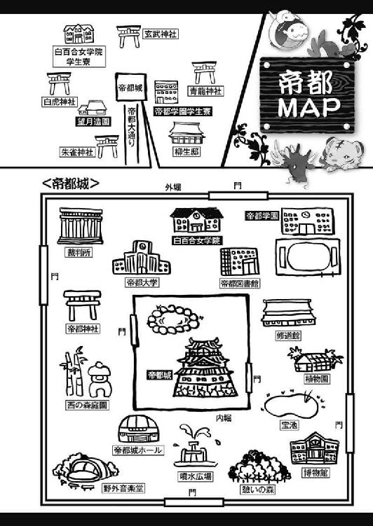

| お庭番望月蒼司朗参る!8 追儺の儀式と最強の炒り豆 (ビーズログ文庫アリス) | |
| 流 星香 & 榊 空也 | |
| エンターブレイン (2011) | |
お庭番望月蒼司朗参る！
追儺の儀式と最強の炒り豆
流星香

電子版 ビーズログ文庫
本作品の全部または一部を無断で複製、転載、配信、送信すること、あるいはウェブサイトへの転載等を禁止します。また、本作品の内容を無断で改変、改ざん等を行うことも禁止します。
本作品購入時にご承諾いただいた規約により、有償・無償にかかわらず本作品を第三者に譲渡することはできません。
本作品を示すサムネイルなどのイメージ画像は、再ダウンロード時に予告なく変更される場合があります。
本作品の内容は、底本発行時の取材・執筆内容にもとづきます。
本作品は縦書きでレイアウトされています。
また、ご覧になるリーディングシステムにより、表示の差が認められることがあります。

１
首都帝都、華やかなる中心地、帝都城は二重の堀に囲まれた、強固な結界領域である。
内堀と外堀の間、帝都城公園は様々な施設のある帝都有数の観光地であり、帝都民の憩いの場だ。特に用事がなくても、帝都城公園を歩くのは楽しい。
各施設を繋ぐ遊歩道はいつでも心地よく整えられていて、絶妙に配置された樹木や植え込みを眺めながら、のんびり散策するだけでも気持ちいい。日曜や祝日には遊歩道の近くで、大道芸人が興行していることもある。
木立の奥のあちこちにある、ちょっとした場所では、キャッチボールやバドミントンをして遊ぶことができるし、花の写真撮影や、体操やダンスをしている者たちを見かけることもある。楽器や歌の練習をしているのが聞こえてくることもあるだろう。
何かを行っている場合には、お気に入りの場所でいつも活動している者も多いので、帝都城公園の散策を趣味や日課にしている者たちにとっては、何度か見かけたことのある顔馴染みもできる。
「あ、清ちゃん、あの人、またバイオリンの練習しに来てる。いつ聞いても上手いなぁ」
「あの曲、来月の帝都音楽祭の課題曲だね。あの人、去年の帝都音楽祭で準優勝したんだよ」
帝都城公園の植物の管理を任されているお抱え庭師、望月造園の庭師見習いの高校生、望月蒼司朗と清志朗にとっても、自分たちが働いている帝都城公園で居心地よく寛ぐ帝都民の姿は、元気の素だ。
『望月造園』と屋号の入った揃いの法被姿で帝都城公園を歩くのは、誇らしい。
「あそこで画家のおじさんが写生してる木、この前、清ちゃんが枝を切ったやつだよね」
「先月、蒼くんが植え替えた花壇、写真を撮られてるよ」
同じ花を植えた花壇は他にもあるのだが、ひとつの花壇にカメラの三脚が集まっている。
「すごいね、蒼くん」
清志朗に微笑みかけられ、蒼司朗は気まずそうに視線を逸らす。
「あれは......、その、たぶん、こいつら───奥庭の四神様のせいだよ」
「ミギュ？」
ちょいちょいと人差し指の先で頭を撫でられて、蒼司朗の胸元にいたチビ白虎が、円らな目を瞬く。
「キュオー」
「チュチュピチュ」
「「（しゅー）」」
チビ白虎が撫でられたのを羨ましがって、蒼司朗におぶさっていたチビ青龍、頭の上に乗っていたチビ朱雀、法被のポケットにいたチビ玄武が、次々に顔を出して甘えた声で鳴いた。
帝都学園高等部一年生で一番小柄な生徒である蒼司朗には、赤ちゃんサイズのふわふわピヨピヨしたちっちゃい四神様がくっついている。ミニマム＆ミニマム＝ラブリーチャーミー♡
きゅんきゅんと甘えてくるちびっちゃい聖獣と、それらを面倒見よく可愛がる蒼司朗の様子は、何とも微笑ましい。
しかし聖獣の姿は、守護領域である帝都城内堀の内側にいるときか、聖獣の加護を受けている者か、霊力のある者にしか見えない。
ピヨ四神を可愛がって、ちょいちょいと指先で撫でているときの蒼司朗は、聖獣の見えない者には謎動作で、ちょっとばかり挙動不審なのが困りものだ。
蒼司朗に甘えるピヨ四神の姿は悶絶ものの癒し系なのだが、帝都城公園なので、残念ながら霊力のない清志朗には見えない。
だが清志朗はピヨ四神が蒼司朗にくっついている、いつもの場所を知っていて、蒼司朗がピヨ四神を可愛がっている姿を見たことがあるので、何をしているのか推測できる。
「奥庭の四神様のせいって？」
「仕事してるオレの周りで遊んでたんだ」
ふわふわにほぐされた柔らかい土を掘って遊んだり、植え替えたばかりの花にパンチしてじゃれたり、匂いを嗅ごうと顔を突っこんだり、花びらや葉っぱを銜えて引っ張ったり。
「邪魔するなって、叱って、すぐにやめさせたんだけど......」
複雑な表情になり、刃に袋を被せて持ち歩いている枝打ち斧で軽く肩を叩く蒼司朗に、清志朗は苦笑する。
「四神様だものね」
実体化した四神様が戯れた場所は、清められて神々しくなる。普通の動物なら『悪戯』になることでも、聖獣様なら『ありがたい』行いだ。
植わっている花は他の花壇と何ら変わらなくても、蒼司朗が植え替えた花壇は、奥庭の四神様が触れた『ありがたい場所』なので、霊感のない者も神々しい雰囲気に惹かれて、自然とそこに集まってしまうのだ。
絵心のある人間に、この木がいいと選ばれた、清志朗の手入れした木とは違う。
（オレの実力なら、文句ないんだけどな）
堂々と自慢できないのが、悔しい。
小さく溜め息を吐いた蒼司朗の頬を、慰めるようにチビ青龍が舐める。柔らかくて小さな温かい舌の感触がくすぐったくて、蒼司朗は頬を緩める。
「うん、大丈夫だよ？」
（いつか────、絶対に、ちゃんと実力をつけるから）
同じ作業を同じようにしても、人を惹きつけるもの。本物だけが持つ力を、手に入れる。
（何年かかっても、必ず）
そのために、蒼司朗は生まれ育った巌手を出てきた。帝都一の庭師である伯父の下で修業し、一流の立派な庭師になるのだ。道のりはまだまだ遠いが、一歩一歩、確実に進んでいけば、それでいい。
毎日作業して、蒼司朗にとってはすっかり歩き慣れた帝都城公園だが、ひとつだけ、年末と違う景色がある。
「凧揚げ、流行ってるなぁ」
幼稚園の工作の時間に作ったのだろう、クレヨン描きの絵の小型の凧から、勇壮な絵の描かれた武者凧、凝った作りの連凧などがいくつも優雅に揚がっている帝都城公園の空を、蒼司朗は眺める。
自分の凧を近づけて相手の凧の糸を切る、喧嘩凧をしている者もいる。
「ピチュチュ～」
「キュイ」
「いや、凧は乗り物じゃないから。乗っちゃ駄目だよ」
何やらうっとりと凧を見つめているチビ朱雀とチビ青龍に、蒼司朗は言い聞かせておく。
ピヨ四神の大きさなら、凧に乗ることも不可能ではないだろうが、あれは乗って空を飛ぶものではない。
聞こえるのは蒼司朗の言葉だけだが、何となく内容がわかって、清志朗はくすくすと笑う。
「来月、帝都城公園のお祭り広場で、帝都百貨店主催の凧揚げ大会があるんだよ。年に一度、この凧揚げ大会のときにしか揚がらない、物凄く大きな凧や、長い連凧も見られるよ。誰でも出場できる競争部門には、帝都の有名店の商品が景品としてたくさん出るから、入賞を狙って練習してるんだろうね」
「へぇ、凧揚げ大会かぁ」
幼い頃から何度も遊びに来ていたものの、帝都で暮らしていたわけではない蒼司朗には初耳だ。
「帝都って、結構行事多いなぁ」
「あはは、そうだね」
帝都っ子の清志朗には、すっかり当たり前になっているが、言われてみれば確かにそうだ。
「来月は節分もあるよ」
「うん。それは、オレのとこでもやってた。帝都とは違うだろうけど」
行事は地方色が豊かだ。よく似ていても、まったく同じということは、あまりない。
「チュピ！」
「キュイ！」
「ミゴ？」
「「（しゅー）」」
「え？」
頭の上に乗ったチビ朱雀が小さな手羽を上げ、ぴっと風見鶏のように指し示したほうに、他のピヨ四神と蒼司朗は注目する。蒼司朗の視線を追って、清志朗もそちらを見る。
高い場所にある木の枝から、凧がぶら下がっていた。
「────糸が枝に引っかかっちゃってるみたいだね、蒼くん」
「うん。────あ！ 待って待って！」
蒼司朗は凧の引っかかっている木に向かって走る。
枝に凧の引っかかった木に登ろうとしていた小学校低学年ぐらいの少年が二人、呼びかけた蒼司朗に気づいて振り返った。
「危ないから、登っちゃ駄目だよ」
注意した蒼司朗の声に、糸巻を握った少年たちは顔を見合わせ、凧を見上げる。
「でも......」
下から糸を引っ張っても取れないのなら、木に登って取るしかない。
「オレが取ってあげるからさ」
にこっと蒼司朗が微笑み、後を追ってきた清志朗が少年たちに頷く。
「僕たちは、ここの木の世話をしてる庭師なんだ。任せて」
庭師ならば、木の専門家だ。
蒼司朗と清志朗の着ている『望月造園』と染め抜かれた揃いの法被を見て、少年たちは納得した様子で頷いた。
「次からは、大人の人に言って取ってもらうようにしてね」
真似されると危ないし、帝都城公園での木登りは原則的に禁止なので、今回は特別だと言い聞かせる清志朗に、少年たちは頷いた。
少年たちの凧は、かなり高い場所の細い枝に引っかかっている。木の葉が邪魔をして、下から引っ張っても取れないのだ。望月造園の庭師の中でも、最も体重の軽い蒼司朗なら、天辺まで登っても、この木の負担にはならないだろう。
木の下から枝振りを眺め、蒼司朗はどう登るか頭の中でシミュレートする。
「清ちゃん、これ、お願い」
木に登るには両手を使うので、蒼司朗は枝打ち斧を清志朗に渡す。清志朗は枝打ち斧を大事に預かる。
「気をつけてね、蒼くん」
「うん、大丈夫だよ」
木の幹に触れ、蒼司朗はひとつ深呼吸する。
「ミギャ」
蒼司朗にくっついているピヨ四神たちは、振り落とされないよう、しっかりしがみつく。
「お庭番、望月蒼司朗────、参る！」
気合いを入れ、蒼司朗はするすると木に登っていった。
重さを感じさせない滑らかな動きで、どんどん高く登っていく蒼司朗を、少年たちが目を丸くして見つめる。
（すごいね、蒼くん）
木にとって負担にならない場所を上手に選んで、軽やかに危なげなく登っていく蒼司朗の姿に、清志朗は感嘆する。
こういう気配りが自然とできるから、蒼司朗は『お庭番』を名乗るに相応しいのだと、清志朗は思う。
「お兄ちゃん、すごい......！」
「お猿さんみたい！」
（お猿って、褒め言葉になるかな......？）
きらきらと目を輝かせながら蒼司朗を見守る少年たちに、清志朗は微笑みながら真剣に思い悩んだ。
凧が引っかかっている枝まで一気に上がった蒼司朗は、枝の付け根に腰を下ろし、手を伸ばして糸を外す。
「落とすよー！」
「はーい！」
声をかけた蒼司朗に、下にいる少年たちが大きく手を振る。
糸の先にぶら下がっている凧の重さを確かめながら、蒼司朗は他の枝に引っかからないよう注意して、凧を落とした。
「お兄ちゃん、ありがとー！」
「ありがとー！」
ひらひらと落ちた凧を捕まえた少年たちが、下から大きく手を振るのに、蒼司朗も手を振り返す。
少年たちは蒼司朗と清志朗に大きくお辞儀して、元気よく走っていった。
帝都に来て、蒼司朗は毎日のように色々な事件に関わることになったけれど。
「お庭番として、こういうのもいいな」
木の葉を吹き抜けてくる風に柔らかい髪を揺らしながら、蒼司朗は微笑んだ。
２
土曜日の午後、普段なら蒼司朗は神官修行の合間に見習い庭師として、望月造園の作業を行っている。今日、蒼司朗と清志朗が帝都城公園を歩いていたのは、望月造園で次年度の挨拶に配る、屋号入り手拭いの発注作業を頼まれたからだ。
「毎年、今の時期なんだ？」
「お客様の入れ替わりに合わせるんだよ。あ、蒼くん、ちょっと動かないで」
木から下りてきた蒼司朗に預かっていた枝打ち斧を返した清志朗は、じっと蒼司朗を見つめて手を伸ばす。
顔に向かって手を伸ばされ、何事かと一瞬首を竦めた蒼司朗の右耳の横あたりに引っかかっていた木の葉を、清志朗がそっと摘み取る。
幼い頃から家業の手伝いをよくしているのに、清志朗の手は指がすらりと長く、知的な雰囲気がある。
ただの木の葉の屑でも、清志朗が持つとちょっといいものに見えて、捨てられてしまうのがもったいなく思えるから不思議だ。
「ありがと、清ちゃん」
「どういたしまして」
清志朗に髪を直してもらい、はにかむように蒼司朗は笑った。
「ミギュ」
「キュイ」
「ピチュン」
「「（しゅー）」」
清志朗には見えないが、蒼司朗にくっついて何事かと見守っていたピヨ四神も、同じくはにかむようにひと声鳴いて、恥ずかしそうに隠れた。
暦での年度は一月から十二月でひと区切りだが、市民生活では四月から三月までの十二カ月が新年度となる。転居などで望月造園の顧客が一部入れ替わるのは、三月・四月だ。
挨拶に必要な粗品、屋号の入った手拭いは、三月半ばまでに揃えておくのが、望月造園での習わしになっている。
「去年までは、母さんと一緒に来てたんだ」
清志朗は、望月造園の将来有望な跡取り息子だ。庭師として腕を磨くことも重要だが、細々した雑務も知っておかなければならない。
後継者教育として、家業に関わることを清志朗は幼い頃から、自然に教えられてきた。
「オレなんかが一緒に行っていいのかな」
自分には荷が重い気がすると、蒼司朗はちょっと口を尖らせる。
去年までは義務教育の中学生だったから、清志朗は伯母と二人で出かけていた。今年は高校生になったので、清志朗は大人の付き添いなしで使いに出されたのだろう。
望月造園の経理を任され、しっかりと切り盛りしている、頼もしい伯母と違って、蒼司朗はただの足手まといだ。清志朗一人のほうが、面倒がないような気がする。
いまひとつ乗り気ではない蒼司朗に、清志朗は言う。
「蒼くんだって知っておいたほうがいいことだよ。だから父さんは、蒼くんにも行くように言ったんだ。次の帝都城のお抱え庭師のお役目も、絶対に望月造園の親方がもらうよ。僕は負けないからね、蒼くん」
清志朗に挑戦され、蒼司朗はきょとんと目を瞬く。
「え？」
「ミギュギュ」
「キュイ」
「ピチュ」
「「（しゅー）」」
蒼司朗にくっついているピヨ四神も、顔を出して、蒼司朗と同じように円らな瞳できょろんと清志朗に注目する。
わかっていないらしい蒼司朗に、清志朗は穏やかに微笑む。
「うちの父さんと蒼くんのお父さんと、『同じ』だよ」
清志朗の父・左近と、蒼司朗の父・右近。
望月造園に生まれた兄弟は、競い合って庭師としての腕を磨き、兄は父から帝都城のお抱え庭師の仕事を引き継いだ。
弟の右近は、帝都城お抱え庭師にはなれなかったが、庭師としての優秀さを、巌手城のお抱え庭師の親方に惚れこまれ、次代の親方として巌手城に迎えられた。
あのとき、ぜひにと強く誘われて巌手に行ってなければ、右近は望月造園を支えるもう一人の、実力ある優秀な庭師として、帝都に残っていたことだろう。
（オレ......）
四月生まれと三月生まれなので学年こそ同じだが、幼い頃から兄のように慕っていた清志朗に、競争相手として見てもらえたことに驚き、蒼司朗は胸を熱くする。
清志朗のことは、望月造園の庭師たちの誰もが、将来有望だと認めている。
筋のよさが見えて高評価である清志朗に比べて、蒼司朗の作業はまだまだ粗が目立ち、とても褒められたものではない。
今現在の明確な実力差に、自分なんてとんでもないと、蒼司朗は謙遜して身を退くことはできるが、それでは期待を寄せてくれている清志朗の思いを踏みにじることになる。
「父さんたちが庭師としての腕を競い合った植木市は、毎年七月の第一日曜日にある。二十三歳のときに、父さんは帝都一の腕を認められた。────あと七年だね、蒼くん」
「......うん」
ここは逃げたり誤魔化したりせず、堂々と受けて立つことで、蒼司朗は清志朗の期待に応えられる。
帝都の植木市は、品評会と一般販売が行われ、帝都にあるすべての造園業から、腕に覚えのある庭師が作品を出品する。
帝都の庭師にとっては、年に一度の大イベントだ。
帝都の現役親方衆すべてが競争相手だし、帝都の外から腕自慢のために出品する者も大勢いる。それらすべてに勝らなければ、帝都のお抱え庭師の親方にはなれない。
（あと七年......）
清志朗の父、望月左近は二十三歳で、帝都一の庭師としての栄誉を自分のものにした。
右近は左近と二歳違いだったので、修業期間としては弟の右近のほうが不利だ。蒼司朗は清志朗と十一カ月しか差がない。
左近と清志朗を基準とするなら、年齢的には、右近より蒼司朗のほうが庭師としてより多く学べる時間がある。
しかし蒼司朗は、事故による大怪我からの回復に相当の時間を費やし、リハビリのひとつとして剣道を行っていた。出場した剣道大会で優勝し、巌手圏ではちょっと知られた少年剣士になったが、その間、庭師になるための修業が疎かになっていたことは否めない。
（オレは、清ちゃんとは違う......）
望月造園の後継者としての期待に応え、真っ直ぐひたむきに、帝都一の庭師になろうと明確な目標を掲げて日々を過ごしてきた清志朗とは違う。
帝都に来て、望月造園の庭師見習いとして清志朗と一緒に作業するようになって、その実力の差を、蒼司朗は肌で感じていたはずなのに────。
（もっともっと真剣に考えなくちゃいけなかったんだ）
悔しがったり、反省するのではなく、前向きに。
毎日、ただ無我夢中に行動するだけでなく。
蒼司朗は枝打ち斧を握る手に、きゅっと力をこめる。
「がんばるよ、オレ」
差は開いているが、『まだ七年ある』。
（清ちゃんをがっかりさせないように────！）
庭師としての腕を磨き、望月造園の次の時代を担えるようになるのだ。
決意を新たにする蒼司朗に、清志朗は微笑む。
「無理はしないようにね。蒼くんはいつ何をするときでも一生懸命だから、心配になるよ。お見舞いに行くのは、苦手なんだからね」
「え？ あ、あぁ、ごめん、清ちゃん」
お庭番になって四神変化して、何度も昏倒して病院に運ばれた蒼司朗は、恐縮する。
毎回わりとすぐに退院できたので、蒼司朗は酷い全身筋肉痛になって気を失っていただけぐらいに気楽に考えているが、実際の容体はかなり危なかった。
二度目の入院のときは重度の貧血状態で、清志朗と四神の戦士で白虎の戦士の篠原勇輝の血を輸血している。不安がらせたり、恩に着せるつもりはなく黙っているため、蒼司朗はそのことを知らない。
（それに、奥庭の四神様と一緒に『縮んでた』し......）
聖獣である奥庭の四神様だけでなく、普通の人間が、ひと回り縮んだり元に戻ったりするのは信じがたいが、目の前で起こっていた事実を否定するほど、清志朗は狭量ではない。
「蒼くん、今年は入院しないようにすること！」
「はぁい」
人差し指を突きつけ、怖い顔をしてみせる清志朗に、蒼司朗は降参と小さく手を挙げた。
これまでの頻度から考えて、この先、一度も四神変化しないで済むとは思えない。
（修行しないと！）
霊力をうまく操れるようになって、身体にかかる負担が少なくなれば、昏倒して入院したり、へろへろになって背負われて帰ることもなくなる、はず────！
「ミギュ」
「キュイ」
「チュピ」
「「（しゅー）」」
ピヨ四神は柔らかい肉球前肢や手羽でタッチしたり、ぴろんと舐めたり鼻面スリスリしたりして、ガンバレと蒼司朗を激励した。
屋号入りの手拭いの発注作業は、毎年同じ時期に来店して行っていることなので、店主とも慣れた調子でやりとりし、滞りなく終わった。
「出来上がりましたら、納品いたします」
「よろしくお願いします」
記入を終えた注文書を渡し、会釈する清志朗と一緒に、蒼司朗も慌てて会釈し、店を出た。
（緊張したー......！）
屋号入りの手拭い千枚は、高校一年生の蒼司朗にとって大きな買い物だ。注文に立ち会っただけで、支払うのは蒼司朗ではなく望月造園だが、普段扱わない金額に圧倒されてしまう。
「そう言えば、清ちゃん、ここに来る前に池波さんに呼び止められてたよね」
「あ、池波さんに葉書を頼まれてたんだった。郵便局に寄らなくちゃ」
思い出した清志朗は足を止め、蒼司朗と一緒に回れ右をする。
「ありがとう、蒼くん。忘れるところだった」
店に入るまで清志朗は確かに覚えていたのに、注文が終わったと思ったら、気が抜けて忘れてしまったようだ。
蒼司朗を連れて行くので、余裕のあるふりをしていたが、やっぱりかなり緊張していたのだと、清志朗は自覚する。
（駄目だなぁ）
清志朗はいつだって、蒼司朗の前では格好をつけたいのに。詰めが甘い。
「清ちゃんでも、そういうことあるんだ？」
意外だと笑う蒼司朗に、清志朗は苦笑する。蒼司朗が遊びに来ていた頃よりも一緒にいる時間が長いせいで、無様なところを見せてばかりな気がする。
「失敗ばっかりしてるよね。格好悪いな」
「そぉんなことないよー」
爽やかに蒼司朗は清志朗に笑いかける。
「清ちゃんは、ずーっと、オレの自慢だもん」
鮮やかに晴れ渡った空の色を名前に持つ従兄弟は、澄んだ瞳で清志朗を見つめる。
蒼司朗の瞳に映る自分の姿を見て、清志朗は微笑む。
「────蒼くんがいるから、僕は『僕のなりたい自分』に近づくことができるよ」
清志朗が理想とする、『自分』。
（蒼くんがいなかったら、きっと今の僕はなかった）
「へ？」
蒼司朗の目から見れば、清志朗はいつでも完璧だ。
言われたことがいまひとつよくわからず、目を瞬く蒼司朗に、清志朗は急に恥ずかしくなる。
「葉書、買ってくるね。すぐ済むから、ちょっと待ってて」
赤くなった清志朗は、逃げこむように郵便局に入った。
町の区画ごとにある郵便局は、出張所なので、十数名も入ればいっぱいになるくらい小さい。葉書の購入は手間のかかることでもないので、他の客の迷惑にならないように、蒼司朗は外で待つほうがいい。
「なりたい自分、かぁ......」
蒼司朗はポストにもたれ、ほうと息を吐く。
「やっぱり清ちゃんはすごいなぁ」
蒼司朗はいつでも『今』が手一杯で、そんなことを考える余裕もない。
（なれるものなら、もうちょっと、背が高くなりたいよなー）
なりたい自分の理想なんて、蒼司朗には山ほどあるけれど、理想を掲げたとしても、清志朗のように近づけるとは思えない。
「────ミギャギャ」
「キュイキュイ」
「ピピッチュ！」
「「（しゃーしゃー！）」」
「え？」
ピヨ四神が顔を出して騒ぎだしたので、蒼司朗は何事かと顔を上げる。
「あっち？」
何かあるらしいと、愛用の枝打ち斧を握り直し、蒼司朗は身構えて振り向く。
ひったくりか強盗か、それとも何か別の事件か。こっちに向かって駆けてくる者がいたなら、速やかに対処しなければと、ビシバシに警戒していた蒼司朗は、不穏のかけらもない長閑な光景に、きょとんと目を瞬く。
「......あ、れ？」
「お豆ー、美味しい炒り豆ー、節分の豆はいかがですかぁー」
駅弁売りの行商人のように、小さな幟をつけた箱を紐で首にかけて、豆売りをしている少年がいた。
（中学生、だよな？）
帝都学園中等部の制服を着ているから、きっと間違いない。
（どこの子だろう）
帝都の言葉のイントネーションとは、ちょっと違う。地方から帝都に勉強しに来ている子供なのだろう。
（でも、どうして豆売り？）
確かに節分は近いのだが。
帝都で学んでいる地方出身の子供は、ある程度裕福な家の子供か、奨学金を勝ち取れるくらい優秀な子供だ。
裕福な家の子なら、小遣いはきちんともらっているだろうし、奨学生は勉学やクラブ活動などが奨励され、アルバイトなどの学外での労働は禁止されている。
どちらにしろ、豆売りをして稼ぐなんて、ありえない。
「香ばしくて、美味しい福豆でーす」
確かに、風に乗ってほのかに香ばしくていい匂いがする。
ひょっとすると、ピヨ四神が騒いだのは────。
「......この匂い？」
「ミギュ」
「キュイキュイ」
「チュピピ」
「「（しゅー）」」
「お前ら、鼻がいいなぁ」
ピヨ四神はこれまで町の中で嗅いだことのない珍しい匂いに気づいて、注目したようだ。
一生懸命な豆売りの少年が可愛らしくて、生け花のお稽古帰りらしい和服姿の婦人が、はんなりと微笑みながら足を止めた。
「ひと袋くださいな」
「はい、毎度ありぃ！」
少年は元気よく返事して、婦人に福豆をひと袋渡し、代金を受け取った。
帝都での物価は、地方で育った蒼司朗には、少し高いと思う。だが、帝都で暮らしているならば、それ相応の収入があるので大丈夫なのだろう。
漏れ聞こえてきた会話で、少年の売っている福豆は、帝都での相場より、少し安いようだとわかる。
「わしにも、おくれ」
「はい！」
シルクハットを被りステッキを持った学者風の老紳士も、にこやかに少年から福豆を買っていった。
（売れる、よな。安いし）
「ミゴゴ！」
「キュイキュイ！」
「チュッ、ピピピ！」
「「（しゃーしゃー！）」」
「え？ あの豆が欲しいの？」
きゃわきゃわと騒ぐピヨ四神に、蒼司朗は眉を顰める。
「でも、なぁ......」
炒り豆は香ばしくて美味しいが、赤ん坊が食べるには、ちょっと硬い。しかし柔らかくした煮豆では、節分の福豆とは呼べない気がする。
（うーん......）
腕組みし真剣に考えこんだ蒼司朗は、近くに人の気配がして、顔を上げる。
（清ちゃん......）
「君も、豆、買わん？」
清志朗よりも、低い位置から、声。
福豆売りの少年が、にこっと蒼司朗に微笑んだ。
さっきガン見していた蒼司朗の視線を感じて、お客になるかもと考えて近寄ってきたようだ。清志朗はまだ郵便局から出てきていない。
「安ぅしとくけん。ボクの豆は美味いでー」
同じ目の高さで、ほら、と差し出された紙袋入りの福豆は、香ばしくていい匂いがした。
いくらか売れたようだが、少年の福豆は、まだまだたくさんある。
（売りきっちゃったほうが、いいんだよな。やっぱり）
炒りたてのほうが美味しいだろうから、今日売れ残ると、少しずつ味が落ちるだろう。
「え、っと......、それじゃあ......」
ひと袋ぐらいなら、おやつにでもすれば、すぐに食べきってしまう。使いで町に出たからと、望月造園の庭師の皆へ、お土産にするのも悪くない。
（何袋買うのがいいかな）
財布にいくら入っていただろうか。
ポケットに手を入れて確かめようとした蒼司朗は、郵便局から出てきた清志朗に気づいた。
「清ちゃん」
ポストの向こうにいた蒼司朗に、清志朗は振り向く。蒼司朗を見て、にこっと微笑んだ清志朗は、一緒にいた福豆売りの少年の姿に、眉を顰めた。
「────君、許可を取って売ってるんじゃないよね？」
「え？」
少年は硬い表情で近づいてくる清志朗に、目を瞬く。
清志朗は向かいの通りに、町内を巡回中の警官を見つけた。
「お巡りさーん！」
手を挙げて警官に呼びかけた清志朗に、蒼司朗は驚く。
「ちょっ、清ちゃん......！」
「あ、あの......」
何やらまずいことになったらしいと、逃げ腰になった少年は、急いで頭を下げる。
「ごめんなさい！ 余所に行きます！」
駆けだした少年に、清志朗は手を伸ばす。
「待って！」
「清ちゃん！」
（もういいんじゃないの!?）
執拗な態度は、いつもの清志朗らしくないと、蒼司朗は困惑する。
駆けだした少年は、しかし、向かいから来る別の警官の姿に、慌てて足を止めた。
挙動不審であり、物売りをしていたらしい少年の姿を見て、警官は厳しい表情になり、足早に少年に近づく。
警官から逃げるには、横断歩道や信号を無視して通りを無理に渡るしかないが、交通量の多い場所なので、それはあまりに危険だ。
どうしようと途方に暮れた少年に、蒼司朗と清志朗を追い抜いて、帝都学園高等部の制服を着た少年が近づいた。
（あれ......、あの人......）
学年章で二年生だとわかるが、顔に見覚えがあると蒼司朗は思う。
（どこで会った人だっけ？）
学年が違うと、学校の校舎の階や、寮の部屋や共用施設の利用場所も分かれるので、部活が同じだったり、役員をしているのでなければ、顔を合わせたり親しく話したりする機会はほとんどない。
「すみません！ すぐにやめさせます！ もう二度とさせません！」
高校生の少年は大きな声で謝罪しながら、福豆を入れた箱を少年から取り上げ、少年を上から押さえつけるようにして、一緒に警官に向かって頭を下げた。
厳しい表情で福豆売りの少年の前後から近づいた二人の警官は、顔を見合わせ、いくらか表情を和らげる。
近くの派出所に強引に連れて行かれそうな雰囲気だったが、年上の少年が出てきたことで、注意で済むようだ。
「────何やってんだよ！」
「だって、比呂ちゃん、この豆......」
「いいから！ 帰るぞ、弥一！」
警官の注意が終わってから、高校生の少年は福豆を売っていた中学生の少年を怒鳴りつけ、腕を掴んで引きずるようにして歩き去った。
「井坂先輩の知り合いだったのか」
見知った少年が現れたことに、清志朗は少し安堵する。
視線を落とした蒼司朗は、枝打ち斧をぎゅっと握った手を小さく震わせる。
「酷いよ、清ちゃん......」
いくら決まっている『いけないこと』でも、警官など呼ばず、清志朗ならもっと穏やかに注意できたのではないだろうか。
「蒼くん、誰かあの子の豆を買ってたのを見たかい？」
尋ねられ、視線を落としたまま蒼司朗は答える。
「────生け花の帰りらしい、着物の女の人と、シルクハットを被ってステッキを持った、学者さんみたいなお爺さんの二人が、ひと袋ずつ買ってるのを見たけど......」
「そう」
あっちとそっちに行った人と指さした蒼司朗に教えられ、清志朗は頷いて歩きだす。
警官たちに報告しに行くらしい清志朗に、顔を上げた蒼司朗は自分の目を疑う。
（清、ちゃん......）
「先に帰ってて」
突き放された蒼司朗は思わず立ち竦み、そしてくるりと身を翻して駆けだした。
３
（あんなの、オレの清ちゃんじゃない......！）
蒼司朗の知っている清志朗は、いつでも穏やかで優しくて、人を驚かせたり傷つけたりしない、細やかな配慮ができる少年で────。
大人に────警察に告げ口して、事態を大事にしなくてもよかったのではないかと、蒼司朗は思う。
福豆を売っていたあの少年は、自分がいけないことをしていたという自覚などなかった。悪いことだと知らずにしてしまうなんて、子供にはよくあることではないのか。
（清ちゃんなら......）
────蒼くんがいるから、僕は『僕のなりたい自分』に近づくことができるよ。
（オレ、一緒にいたよ？）
あれが清志朗の理想とする姿なのだろうか......。
やりきれない思いで、蒼司朗は作業場所である帝都城に向かって歩道を駆ける。
「ピイ！」
警告するように、蒼司朗の頭の上のチビ朱雀が鋭い声で鳴いた。
「え？」
駆けながら、はっと顔を上げた蒼司朗は前方に人がいたことに気づく。
「っ！」
（間に合わない......！）
いつの間にか、かなりの速度で駆けていた蒼司朗は、回避できない。
帝都学園高等部の制服を着た二人連れの少年は、突進してくる蒼司朗に気づいて振り向く。
「あれ？ 蒼司朗クン」
（蔵田先輩）
すぐ目の前で、にこりと微笑んだ銀縁眼鏡の男子生徒が、玄武の戦士の蔵田実親だとわかった瞬間、蒼司朗の身体は歩道から弾き出されていた。
小柄な身体は軽々と宙を舞い、歩道と平行に流れていた幅三メートルほどの浅い川へと落下した。この川のどこにこんなに水があったのかと思うぐらい、派手な水柱が上がる。
「......蔵田センパイ......！」
ひょいと動いた蔵田実親に、水除けの壁にされた篠原勇輝は、豪快に飛沫を食らった。
髪からぼたぼたと滴を落とす篠原勇輝に、蔵田実親は微笑む。
「いやぁ、奥庭の四神様が無事でよかったねぇ」
蒼司朗が吹っ飛んだ瞬間、ピヨ四神は引き寄せられるように蔵田実親の両腕に納まっていた。
「ミギャ」
「キュイ」
「チュピー」
「「（しゅー）」」
あっという間の出来事に、蔵田実親に抱えられたピヨ四神は、ぱちぱちと目を瞬き、周りを見回す。
（あ、れ......？）
枝打ち斧を両手で握り、川底に尻餅をついた蒼司朗は、何が起こったのかすぐには理解できず、全身ずぶ濡れのまま、呆然とする。
一瞬の出来事だったが、川の水の中で一回転したような気がする。
「────ミギャギャ！」
「キュイッキュオー！」
「ピーチュチュ、チュチュピ！」
「「（しゃーしゃー！）」」
少し高くなった岸の歩道のほうから、心配して呼びかけてくるピヨ四神の鳴き声が聞こえ、ゆるりと蒼司朗はそちらを見上げる。いつの間にピヨ四神が離れたのか、覚えがない。
「やぁ、大丈夫かい？」
岸に植えられた柳の近くで、ピヨ四神を両腕に抱え、蔵田実親は微笑んで蒼司朗を見下ろす。
蔵田実親は玄武の戦士であり、玄武は四神最強の防御力を誇る。
勢いよく突っこんでくる蒼司朗に気づいた蔵田実親は、とっさに玄武の力を使って蒼司朗を弾き飛ばし、衝突の危険を回避した。
蔵田実親がちょっと本気を出したなら、制御不能で突っこんでくるトラックであっても、難なく撥ね除けてしまうだろう。
ピヨ四神だけは川にダイビングさせないよう、きっちり保護するだけの余裕があった蔵田実親なら、突進してきた蒼司朗なんて、指一本で止められたはずだが、そうしないで川に放りこむところは、意地が悪い。
（大丈夫なわけねーだろ......！）
真冬に川に放りこんでおいて、何を白々しいことをと篠原勇輝は力一杯怒鳴りつけたいが、そうするとＭ属性の蔵田実親を喜ばせるだけだ。胸の内でツッコミを入れるだけに留め、篠原勇輝は不機嫌な顔で、額に張りついた濡れた髪を掻き上げる。
白虎の戦士として加護を受けている篠原勇輝は、風邪をひいたり肺炎になることはないが、同じく加護を受けているとしても奥庭の四神様と知り合ってからの日がまだ浅い蒼司朗に、同じだけの無病息災を期待するには無理がある。
二月になろうかという冬の寒空に、川に投げ落とされた蒼司朗は、凍りつきそうな冷たさを体験しているはずだ。風邪をひくのは時間の問題だろう。
「なぁに間抜け面してやがんだよ......！」
「......篠原......」
蒼司朗は川の中に座ったまま、ゆっくりと目を瞬く。
呆然としている蒼司朗に、篠原勇輝は眉を顰める。
「おいこら......！ 何ボケてやがる!?」
「......え......？」
反応の鈍い蒼司朗に、篠原勇輝は犬歯を剥いて吠える。
「いつまでもそんなところにいられるとうっとうしいんだよ！ とっととその棒の先、こっちに寄越しやがれ！」
ぎゃんぎゃん怒鳴る篠原勇輝に、蒼司朗は大事に握っていた枝打ち斧の柄の先を差し出す。
篠原勇輝は枝打ち斧を引っ張って、蒼司朗を川から引き上げた。
「ミギュ～」
「キュオ～」
「うーん、見事に濡れ鼠だねぇ」
両腕に抱えたピヨ四神たちが困った顔で蒼司朗を眺め、蔵田実親は微笑んで首を傾げる。
どうしていきなり川にはまっていたのか、蒼司朗はまったくわけがわからなかったが、回避不能と思った衝突を免れていたことから、ようやく事態を察した。
こんな魔法のようなことが起こったのは、ぶつかるところだった相手が、四神の戦士だったからだ。
（他の人じゃなくてよかった......）
自分のことはさておき、大変なことにならなくてよかったと、蒼司朗は安堵する。
「────すみません、蔵田先輩」
「僕はぜんぜん構わないよ」
「俺はぜんぜんよくねぇっすよ......！」
蔵田実親の盾にされて、頭からとばっちりを食った篠原勇輝は、大迷惑である。
「ワリ、篠原......！」
全部自分のせいだと、蒼司朗は篠原勇輝に謝る。下げた蒼司朗の頭から、ぼたぼたと滴が落ちて、篠原勇輝と蔵田実親の足の近くを濡らした。
預かってもらったピヨ四神を返してもらおうと手を動かそうとしたが、蒼司朗は全身ずぶ濡れだ。
帝都を流れている川は、帝都の北側の壁のすぐ外にある山からの湧水で、北から南の方向に流れている。下水道が整備されている帝都では、川に流れこむのは雨水ぐらいで、家庭排水は流れこまない。
今、蒼司朗のいる帝都北地区は、帝都で一番綺麗な川の水が流れている場所で、匂いもなく、透明度の高い水には魚が泳いでいた。
しかしいくら綺麗でも、清められた神社の水ではない。町中を流れている川の水で濡れた身体では冷たいだろうし、聖獣様を抱えるのはよくない気がする。
「────すみません、蔵田先輩、急いで着替えてきますから、それまでその四神様......」
「あぁ、蒼司朗クン、そんな格好で歩き回ったら、風邪をひいてしまうよ。うちの神社に寄って、着替えていきたまえ」
「でも、それじゃ、ご迷惑に────」
「あざーっす！」
ずぶ濡れのくせに遠慮しようとする蒼司朗の頭に手を置いた篠原勇輝は、押し潰すようにしてお辞儀させる。
「ちょ、篠原......！」
「甘えときゃいいんだよ！ 玄武神社はすぐそこだ！ テメーはチビである前に、奥庭のお庭番なんだからな！」
蒼司朗にとって一部聞き捨てならないＮＧワードが交じっていたが、その後の言葉のほうがポイントが高かった。お庭番であることを自覚し、蒼司朗は口を噤む。
蒼司朗を先導して歩きはじめた蔵田実親は、一緒についてくる篠原勇輝に首を傾げる。
「あれ？ 勇輝クンは誘ってないんだけど」
「俺を水除けの壁にしたのは、どこの誰っすかね？」
「誰かなぁ」
（平常心っ......！）
すっとぼける蔵田実親に、篠原勇輝はむかっ腹を立てるが、ここで大声を出して怒鳴っては、喜ばせるだけだ。
「......へー、そーゆーコト言っちゃうンすねー」
「うん。言っちゃうんだよ」
笑顔で蔵田実親と険悪なやりとりをしながら、篠原勇輝は遅れがちになる蒼司朗の二の腕を掴んで、玄武神社に引っ張って行った。
蒼司朗が玄武神社に足を運ぶのは、正月の神社参拝コンプリート以来だ。
あのときは参拝客が多く、早く参拝を終えようとしていたので、神社を眺めている余裕はまったくなかった。
「────実親様、お帰りなさいませ......！」
「お帰りなさいませ！」
玄武神社の鳥居をくぐった蔵田実親に気づき、境内の掃除をしていた神官が二人、急いで出迎えに現れた。
帝都の各神社の特徴は、建物よりも神官の人相風体に顕著に現れる。
蟲と戦うため、武闘派寄りの神官が多く集まる帝都において、四神最強の防御力を誇る玄武を守護神とする玄武神社には、どちらかというと硬派体育会系という雰囲気の、いかつい男性神官が多い。
「......ミギュ」
「キュウ」
「ピ」
「「（しゅー）」」
蔵田実親に抱えられているピヨ四神が、人見知りして、ちゅーっと小さくなった。
「あれ？ あれれ？」
さっきまでミギャミギャキュイピピしゅーと、会話するように騒々しく鳴きながら、きょろきょろと物珍しそうに周りを見回していたピヨ四神が、急に静かになった。抱っこされている蔵田実親の腕の陰に隠れるように、頭を引っこめている。
玄武神社に入ってすぐのピヨ四神の様子に、蔵田実親はどうしたのだろうかと眉を顰める。
「（怖くないよ。ほら、ゲン、ニョロ、この前、御前試合のときにいた人たちだろ？）」
帝都城を守護する聖獣としてどうかと思うが、ピヨ四神は子供や綺麗な女の人は大好きだが、ゴツイ大人の男の人は苦手というか、怖いのだ。
小さな声で蒼司朗が教えて、まずチビ玄武が顔を上げた。確かにそうだと、合点がいって緊張を解いたチビ玄武に、チビ白虎たちも顔を上げる。
蔵田実親が腕に抱えているピヨ四神に気づいた神官たちは驚き、思わず破顔しそうになったが、無理して表情を引き締める。
頭ひとつは背の高い、体格のいい大人の神官たちに、愛くるしいピヨ四神を抱っこしながら蔵田実親は尊大に微笑む。
「この近くで蒼司朗クンが川に落ちてしまってね。身体を綺麗にして温めてあげたいのだけど、湯殿の支度はできているかな？」
落ちたのではなく、蔵田実親が落としたのだが、聞こえが悪いので、そこのところはうまく誤魔化したようだ。
まだぼとぼとと滴を落としている蒼司朗が濡れ鼠であることは、一目瞭然である。
「は、東の湯殿ならば、すぐにお入りになれますかと」
応えた神官に向かって、とっとと連れて行ってくれと言うように、篠原勇輝は蒼司朗を押しやる。神官は恭しく蒼司朗を迎え、一緒に行かないのかと、その場から動こうとしない篠原勇輝を見る。
「俺は風呂に入るほどじゃないから、湯桶と手拭いをくれないか。飛沫を浴びちまったんだ」
見た目は似ていても、完全に川にはまってずぶ濡れの蒼司朗と違って、篠原勇輝は飛沫を浴びただけだ。
「かしこまりました。すぐにご用意して、東の洗面所に運びます」
合点がいき、蒼司朗を任された神官は速やかに湯殿に向かい、残ったもう一人の神官が篠原勇輝に応えた。
「ミギャギャ」
「キュイキュイ」
「チュチュピピ」
「「（しゅー）」」
神官に湯殿へと連れられていく蒼司朗を見て、下ろしてくれと鳴いてピヨ四神は円らな瞳で蔵田実親を見上げる。
ふわふわ軽くて温かく、柔らかい聖獣様を、もうしばらく抱っこしたい気分だった蔵田実親は、にこっとピヨ四神に微笑みかける。
「蒼司朗クンがお風呂から出るのを、お茶しながら待ちましょう。美味しいお菓子がありますよ」
誘いかけられ、お菓子と聞いて、キラン☆とピヨ四神は目を輝かせた。
奥庭の四神様への点数を稼ごうとする蔵田実親を、篠原勇輝は横目で冷ややかに見る。
「奥庭の四神様の食事やおやつは、あのチビががっつり管理してますから、差し上げちゃダメっすよ」
「ミギュウン......」
「キュウ」
「ピピッチュ」
「「（しゅー）」」
蒼司朗に炒り豆をねだったのに、何だかばたばたして買ってもらえなかったピヨ四神は、篠原勇輝の言葉なんて聞こえないふりをして、蔵田実親に向かって甘ったれた声で鳴く。
きゅるるーんと、おねだり顔をして円らな瞳をキラキラさせ、愛想を振りまいているが、それこそ要注意だ。
（ああっ、可愛いっ......！）
四神様を抱っこしている蔵田実親は、怖がらせないよう静かに悶絶する。
愛らしい四神様は、できればたっぷり甘やかしたい。でもそれで蒼司朗を怒らせて罵倒してもらっても、少し方向が違う。
欲しがるからと、欲しいままに与えて、四神様の食事計画が狂うのは、きっとよくない。
「じゃあ、お茶だけでも。とっておきの葉をお出ししましょう」
「お茶に含まれるカフェインは、興奮剤になるらしいっすよ。あのチビは四神様には飲ませてませんよね」
ピヨ四神に対していい顔をしたい蔵田実親の言葉に、篠原勇輝はすかさずツッこむ。
ピヨ四神にも食事をとらせるため、蒼司朗は生徒会室を借りて昼食を食べている。蔵田実親も同じ場所で昼食をとっているが、確かに蒼司朗がピヨ四神にお茶を飲ませているのを一度も見たことがない。
緑茶に含まれるカフェインは、コーヒーより多い。夜に飲むと眠れなくなるし、一般的に、動物には与えない。
「ふむ」
（けっこう細かいんだな）
成り行きで、小さい赤ん坊サイズの聖獣様の面倒を見ているだけかと思っていたが、蒼司朗が日常的に自然にやっていることすべて、なかなか本格的で、きっちりしているらしいと蔵田実親は感心する。
「ミギュ～」
「キュオ～」
「チュピ～」
「「（ぶしゅ～）」」
あれもダメこれもダメと禁止され、不満そうなピヨ四神に、にっと篠原勇輝は微笑みかける。
「お茶じゃなく、綺麗な清水はいかがです？ お清めされた玄武神社の水なら、蒼司朗も文句ないですよ」
水分補給は、赤ん坊には欠かせない。たくさん飲んだとしても、お清めされた水なら、ピヨ四神の身体の負担にはならない。
「ミギャミギャ」
「キュオキュオ」
「チュッピピチュ」
「「（しゅー）」」
途端に機嫌よくなったピヨ四神に、くすっと蔵田実親は笑う。
「勇輝クン、キミ、いつでもお庭番になれそうだねー」
揶揄するのでなく、蔵田実親は本当にそう思ったのだが。
「なれるわけないっすよ......！」
怒りを含んだ声で返事され、蔵田実親は驚く。
「勇輝クン？」
顔を伏せた篠原勇輝の表情は見えない。
「────髪、拭いてきます」
篠原勇輝は顔を上げないまま、神官が湯桶を支度してくれる東の棟に走っていった。
濡れた衣服を脱ぎ、湯殿を借りた蒼司朗は、温かい湯船に肩まで浸かって、ほうと息を吐く。ほとんど自覚はなかったが、川の水でかなり身体が冷えていたのだとわかった。
「......こんなことじゃ、ダメだな......」
今回は、たまたま相手が蔵田実親と篠原勇輝で、大事には至らず、自分が川に転落して冷たい思いをして終わったが、違う人とぶつかっていたなら、きっと相手に怪我をさせていた。
万が一にでも奥庭の四神様に何かあったなら、たとえ被害者であっても、相手は祟られていたかもしれない。奥庭の四神様は、愛くるしくて無垢で弱々しい赤ん坊の姿をしているが、その本質に変化はなく、けっして非力ではない。誰かを傷つける意図はなくても、暴発するように、誤った形で力を放出してしまうことだってある。
「ちゃんと周り、見なきゃ......」
呟いて、蒼司朗は恥ずかしくて隠れるように、ゆっくり頭まで湯船の中に沈めた。
４
帝都の各四神神社では、祀っているそれぞれの聖獣が守護する方角に、神主の私室がある。神主の息子であり、玄武の戦士である蔵田実親の私室も神社の北側にあるので、蒼司朗と篠原勇輝に勧められた東の棟は、玄武神社に務めている蔵田家の親族以外の神官たちが使っている棟だ。
東の棟は、住み込みの神官の他に、地方から帝都の神官になりたいと希望する者が見学に訪れたり、短期間修行して泊まっていったりする建物なので、いつ誰がどんな用事で来ても対応できるように、常に調えられている。
「失礼します！」
篠原勇輝は一礼し、東の棟に上がった。
こういう建物の造りはだいたい四神神社のどこでも同じなので、篠原勇輝は水回りの施設のある側に向かう。二階への階段の手前にトイレがあり、洗面所、脱衣所、浴室と続いている。
掃除の行き届いた広い洗面所には、篠原勇輝のための湯桶とタオルが支度されていた。
「使わせてもらいます！」
湯桶を支度してくれた神官は既に洗面所から退出していたが、湯で拭った髪が冷えないよう、ストーブには火が入れられている。
しっかりと暖房の効いた洗面所に入った篠原勇輝は、ほっとひと息吐く。
「......ったく」
鉄壁の防御力もだが、玄武は水の気を持っている。玄武の力で加護されている蔵田実親なら、どんな小さな水飛沫だろうと完璧に撥ね除けられただろう。
それなのに、原因となった蒼司朗の罪悪感を煽るように、これ見よがしに篠原勇輝を巻き添えにするところなど、本当に性格が悪い。
濡れた学生服とハイネックのシャツ、スラックスを脱いで、ストーブの近くに置いた篠原勇輝は、やや熱めの湯を張った湯桶にタオルを浸した。
固く絞った温かいタオルで顔を拭き、がしがしと髪を拭く。
「────篠原様、こちらに着替えを置いておきます。こちらの学生服は、クリーニングにお出ししますね」
失礼しますと声をかけて入ってきた神官が隣の脱衣所と行き来して、篠原勇輝のすぐ近くに衣装籠を置いた。篠原勇輝は髪を拭きながら顔を上げる。
「あ、大丈夫です。すぐ乾くでしょうから、それ着て帰ります」
川の水は清潔とは言えないが、ひどく汚れているわけではない。不快なのは、濡れていたからだ。
篠原勇輝はこれからどこかに出かけるわけではないので、ストーブの火で乾かせば、多少の汚れは我慢して着て帰れる。
「こちらのお着替えは、実親様からでございます」
神官の親切心で運んだものではなく、頼まれて持ってきたものらしい。予備にある神官の着替えなら神官装束だが、衣装籠にあるのは、洋服のようだ。
（蔵田先輩から......）
篠原勇輝は、ちょっと考える。
（機嫌取りのつもりか？）
可愛いところもあるのだなと、篠原勇輝は蔵田実親を少し見直す。
「ありがとう。借りておきます」
「お使いになられましたものは、後で片づけに参りますので、どうぞそのままにしておいてください」
にこりと微笑んだ篠原勇輝に、神官はほっとした様子で、篠原勇輝の学生服とスラックスを横に置いていた籠に入れて退出した。
綺麗に髪を拭った篠原勇輝は、少し湿り気を帯びた髪を、ストーブの前で乾かす。
「────ふう」
髪がふかふかと温かく軽くなって、人心地ついた篠原勇輝は、衣装籠に入っていた着替えに手を伸ばした。
篠原勇輝よりもいくらか体格のいい蔵田実親の衣類だから、仕方ないのだろうが────。
「嫌味かよ......っ！」
トレーナーの袖はまだしも、スラックスの丈が余るのは、どうにもいただけない☆
奥にある引き戸が開閉する音がして、板戸の向こうで人が動く気配がした。
「────蒼司朗？」
「篠原？」
呼びかけ合って、二人は声でお互いを確認する。
蒼司朗の借りた浴室は、一度に十数名が入浴できる広さがあった。
浴室と洗面所の間には脱衣所があったので、蒼司朗は篠原勇輝がいつ洗面所に来たのか、まったくわからなかった。
「篠原、お前......」
「あぁ、こっちで髪拭かせてもらって、終わったとこ。しっかり温まったか？」
「うん」
蒼司朗は肯定の返事をしたけれど。
（洗うだけで、温まってねぇな）
烏の行水だ。ゆっくり湯船に浸かったなら、もっと時間がかかっているだろう。篠原勇輝に強引に引きずられて玄武神社まで来てしまったが、迷惑になってはいけないと、さっさと髪と身体を洗ったのに違いない。
（川に落ちたのは蔵田先輩のせいなんだから、遠慮することねぇのに）
過剰なまでに負けず嫌いだが、蒼司朗は遠慮がちなところがある。
濡れていた蒼司朗の服は、さっき脱衣所から声をかけてくれた神官が持って行った。蒼司朗は衣装籠に支度されていた着替えを借りる。
支度されていたのは、長袖のＴシャツと、ジャージの上下、新品の下着と靴下だ。下着や靴下は伸縮性のある素材で作られているので、ある程度、着用者の体型に幅があり、小柄な蒼司朗でも問題ない。
（ジャージ......。蔵田先輩の私服なのかな）
家に帰ったらラフなジャージに着替えるというのはよくあることだが、蔵田実親にはちょっと似合わない気がする。しかし、個人の趣味をどうこう言うのは失礼だ。
（あ......、サイズ、ちょうどいい）
今より小柄な頃に着ていたものだろうが、着古してくたびれた感じがない。数着を着回すタイプなのかもしれない。
枝打ち斧を持ち、乾いたばかりの髪をふわふわと揺らして、蒼司朗は引き戸を開けて脱衣所から洗面所に出る。
引き戸の開く音に振り向いた篠原勇輝は、蒼司朗を見てぎょっと目を剥いた。
「お、おま......！ それ......！」
「？」
わなわなと身を震わせた篠原勇輝に指さされ、蒼司朗はきょとんとする。
「篠......」
「あンの野郎......っ！」
目を吊り上げた篠原勇輝は、むんずと蒼司朗の手を掴み、引きずる勢いで東の棟を出る。
篠原勇輝の履物は大丈夫だったが、東の棟の玄関で脱いだ蒼司朗の靴は中までぐっしょり濡れて水が溜まっている状態だったので、乾かすために持ち去られ、新しい上等の革靴に替えられていた。蒼司朗のサイズに合わせて、急いで買ってきてくれたようだ。
蒼司朗を引きずっていった篠原勇輝は、北の棟に上がりこみ、座敷にいた蔵田実親を見つけて大声で怒鳴る。
「先輩！ 何だよ、これ！」
両肩を掴まれ、ぐいと前に押し出された蒼司朗は、目を瞬く。
（これ、って......）
物扱いですか？
着替えてきた蒼司朗を見た蔵田実親は、にこっと微笑む。
「やぁ。思ったとおり、ぴったりだったね」
「ミギャミギャギャ」
「キュイキュイ」
「チュッピピピ」
「「（しゅー）」」
房付きの立派な座布団に乗っていたピヨ四神は、座敷に入ってきた蒼司朗に、お利口にしてたよと甘えた声で鳴きながら、よちよちころころとまろび寄る。
蒼司朗は肩を掴んでいた篠原勇輝に手を放してもらい、腰を落として、飛びついてくるピヨ四神を迎える。
「ごめんな。いい子にしてたみたいだな」
抱き上げた蒼司朗に、撫で撫でちょいちょいと可愛がられて、ピヨ四神は満足そうに、くふんと鼻を鳴らす。
「何でこんなモン、まだあるんだよ!?」
怒鳴る篠原勇輝に、蔵田実親は苦笑する。
「だって、買ってからすぐにサイズが変わってしまって、僕はそれをほとんど着なかったんだよ。まだ新しいじゃないか」
「だからって、これ、先輩の中坊のときの体操服でしょうが！」
帝都学園中等部、指定体操服。
「は？」
ピヨ四神を抱えて腰を上げた蒼司朗は、目を瞬いてから真っ赤になった。
言われてみれば、ジャージの胸にある洒落たエンブレムは、安藤奏の着ていた制服で見た覚えがある。
（ぴったり、って......）
ほとんど着ていないというのだから、中学一年生のときの体操服なのに違いない。
確かに蒼司朗は学年一小柄だが、それにしても、蔵田実親が中学一年生のときの体操服がぴったりというのは、何とも情けない。
「このカッコで、こいつを外に出す気ですか!? 別の服貸してください！」
「えぇー？ どうして勇輝クンにそんなこと言われなくちゃならないのかなぁ」
蔵田実親の言葉に、ぐっと篠原勇輝は言葉を飲みこむ。
まるで、なかよしの友達が馬鹿にされたのを怒っているようではないか。
（俺、は────）
言葉に詰まった篠原勇輝は放っておいて、蔵田実親は蒼司朗に微笑みかける。
「蒼司朗クンは別に不満ではなさそうだよ？」
ねぇとばかりに同意を求められたが、蒼司朗は快諾できない。
「────お、お借りしておいて、とても失礼だとは思いますが────」
俯いた蒼司朗は、声を震わせないよう腹に力を入れる。ひと言邪魔されれば、即座に前言撤回しそうな蒼司朗の前に、篠原勇輝が出る。
「チビでも何でも、お、奥庭のお庭番様なんですから！」
蒼司朗を奥庭のお庭番だと認めるのは、心底不本意であると、つっかえて耳まで赤くなりながらも、篠原勇輝は言い放つ。
「こいつを馬鹿にするような真似は、この！ 奥庭の四神様を馬鹿にするのも同じっすよ！」
ばーん！ とばかりに篠原勇輝に示されて、機嫌よく蒼司朗に抱えられているピヨ四神は、きょろんと目を瞬く。
（うーん）
奥庭の四神様を持ち出されては、さすがに蔵田実親も意地悪を続けられない。
「だけどねぇ、僕の持っている服で、蒼司朗クンにちょうどよさそうなものって、それぐらいなんだよ」
やれやれと蔵田実親は腰を上げる。
「ちょっと待っててくれたまえ。サイズが合わないからって、文句を言うのは勘弁だよ」
「────お手数かけてすみません......！」
気だるい口調で言うくせに、さくさくと自室に戻る蔵田実親へと、蒼司朗は大きく頭を下げた。お辞儀の勢いで振り落とされそうになったピヨ四神は、ひしっと蒼司朗にしがみつく。
蔵田実親が座敷を出ていくのを見送って、篠原勇輝は蒼司朗を肘で突つく。
「ちゃんと自覚持てよ......！」
ややずるいことだが、奥庭の四神様を味方につけている限り、蒼司朗が蔵田実親に対して遠慮することはない。からかうような行動をとられたなら、馬鹿にするなと、きちんと対応したほうがいい。
「......ありがと、篠原」
「べ、べつに、テメーのためじゃねーよ！」
まだ耳の赤みが取れないまま、ぷいと篠原勇輝はそっぽを向く。
篠原勇輝は幼い頃から修行をし、努力の結果を認められて、白虎の戦士になった少年だ。
帝都に来ていきなり奥庭のお庭番になってしまった蒼司朗とは、格が違う。
「......うん」
近くで会話することがあっても、けっして友達ではない。
視線を落とした蒼司朗に、篠原勇輝は眉を顰める。
「オメー、やっぱ今日......」
「やぁ、お待たせ」
蔵田実親が戻ってきて、篠原勇輝は蒼司朗にかけた言葉を止める。
蒼司朗は蔵田実親に頭を下げる。
「すみません」
「うん、ホントにね」
「元はといえば、先輩のせいっスよね！」
篠原勇輝は蔵田実親の手から着替えを取り上げ、蒼司朗に渡す。とっとと着替えろとばかりに押しつけられた洋服に、ぴょんとピヨ四神が乗る。
「じゃあ、着替えます」
「勇輝クン、隣の部屋で温かいお茶でもどうだい？」
「あざーっす」
蔵田実親と篠原勇輝には、同性の着替えを眺める趣味はない。蒼司朗を残して、二人は隣の座敷に移動した。
「ちょっと下りててね」
蒼司朗は着替えと、その上に乗っているピヨ四神を畳の上に下ろし、枝打ち斧を置く。
「ミギャギャー」
「キュイキュイ」
「ピチュ、チュチュピ」
「「（しゅー）」」
「こら、よそのお家で騒いで暴れない......！」
さっきまではおとなしくお利口にしていたのに、他の人の目がなくなると、途端にばたばたと座敷を走り回って遊びはじめたピヨ四神に、ジャージを脱ぎながら蒼司朗は苦笑する。
「ったく」
人見知りで内弁慶の神様とは、いかがなものだろう。────帝都城の守護というお役目をきちんと果たしていれば、凜々しい成獣だろうがピヨピヨの赤ん坊だろうが、細かいことはどうでもいいのかもしれないが。
貸してもらった洋服は、蒼司朗にはやはりぶかぶかだった。
（それでも）
絶対に中学生に間違えられるだろう、誂えたようにぴったりの中学校の体操服を着て、外を出歩いて笑い者や噂になるよりは、サイズ違いで格好悪いほうがましだ。
「隠れん坊してないで、行くよ？」
「（ミギュ）」
「キュウ」
「ピチュ」
「「（しゅー）」」
着替えたジャージを畳んで抱えた蒼司朗の声に、壺の中に入ったり掛け軸の裏に隠れて遊んでいたピヨ四神が、急いで蒼司朗に駆け寄った。枝打ち斧を持った蒼司朗が歩きだす前に、いつもの位置にくっつく。
蒼司朗は声をかけて襖を開ける。
「────着替え、ありがとうございました」
隣の部屋は、茶室だった。
（お茶って、こっちか）
急須で淹れたお茶を想像していた蒼司朗は、炉のある本格的な茶室に驚く。
さすがは帝都の玄武神社、名家の子息様。茶室で正座する蔵田実親の姿も、しっかり様になっている。こういう場所でも慣れた様子で寛いでいる篠原勇輝もまた、堂々とした名家の子息様である。
蒼司朗とは、生まれ育った世界が違う。
襖を開けた蒼司朗に振り返り、胡座をかいて座った篠原勇輝は渋い顔で茶を啜る。
（やっぱりな......）
どこもかしこもがぼがぼで、シャツとセーターの袖口からは手の先っちょだけしか出ていないし、スラックスはたっぷりベルトで腰を絞り、裾は大きく折り返されている。
しかし、それでも。
「あはは、可愛いねぇ」
茶杓で茶碗に抹茶を入れた蔵田実親は、くすくすと笑う。
「......どうも」
笑われた蒼司朗は少し赤くなり、蔵田実親から視線を逸らして横を向いた。
「ミュ」
「キュウ」
「ピ」
「「（しゅー）」」
蒼司朗を元気づけるように、ピヨ四神は蒼司朗の頬を舌で舐めたり、温かい鼻面やふわふわの額を押し当てて、すりすりした。
優しいピヨ四神に、蒼司朗の表情が和らぎ、肩に入っていた力が抜ける。
笑われたので、蒼司朗はからかわれたと思ったが、実際はそうではない。
これも人徳のひとつなのかもしれないが、ぶかっとした服を着ている蒼司朗は、嫌味ではなく可愛らしかった。庇護欲をそそるし、サイズの大きい衣服の持ち主に、守られてる感があって微笑ましい。
蒼司朗を気に入った奥庭の四神様が、いつまでもちっちゃいまま、うきゃうきゃと機嫌よく蒼司朗にくっつき回っている理由が、蔵田実親や篠原勇輝にも、何となくわかる気がする。
もちろん、どれほど保護対象に見えようとも、負けず嫌いの蒼司朗は自分のことはきちんと自分で何でもして、人の手を煩わせることを嫌うし、ピヨ四神と四神変化して天の戦士となり、立派に帝都を守っている。
（うーん、いじりたい......）
いじり倒して、思いっきり嫌がられたいと、蔵田実親のドＭ心がきゅんきゅん疼くのだが、曲がりなりにも蒼司朗は奥庭のお庭番様。奥庭の四神様もべったりなので、余計なちょっかいを出すわけにはいかない。
蔵田実親は、軽く咳払いして、気を落ち着ける。
「こっちに座って。お茶を点ててあげるよ」
「あ、りがとうございます」
お茶室で振る舞われる本格的なお茶とはあまり縁のない蒼司朗は、緊張しながら勧められた座布団に座った。
お茶を点てながら、蔵田実親は蒼司朗の様子に首を傾げる。
「今日はおとなしいね。どうかしたかい？」
何をやっているのと、キラキラした目で蔵田実親を見つめているピヨ四神とは、対照的だ。
「どうかしてるかなんて、今さらっしょ？」
篠原勇輝は蔵田実親に呆れた顔をする。
「相手が違えば大事になってたかもしれないような勢いで、前も見ねぇで走ってたじゃないっすか、コイツ」
「............」
俯いて視線を逸らす蒼司朗に茶碗を差し出し、蔵田実親は優しげに声をかける。
「何があったのか、話してみるかい？ 楽になるかもしれないよ」
「清志朗だろ」
篠原勇輝に言われ、蒼司朗は驚いて顔を上げる。
「見てたのか!? 篠原」
「見てねぇよ......！」
（オメーの一大事なんて、たかがしれてるだろうが......！）
むっとしながら茶を啜る篠原勇輝を放っておいて、蔵田実親は蒼司朗に尋ねる。
「清志朗クンが、どうかしたかい？」
「......どうもしてないのかも、しれないんですけど......」
郵便局の近くで福豆を路上販売していた中学生に対応した清志朗のことを、蒼司朗は話す。話を聞いた篠原勇輝と蔵田実親は、蒼司朗に難しい顔をした。
「────なぁるほど」
「帝都民として清志朗クンは正しいよ」
「え？」
事を荒立てないで済んだのではないかという考えに賛同してもらえるものと思っていた蒼司朗は、両手で茶碗を持ちながら、二人の予想外の反応に目を瞬く。
「追儺の儀式は神事だけど、豆に関しちゃ、俺らはノータッチだ。詳しいことは、小此木神官長のとこ行って聞いてきな」
５
「急いで支度させた既製品で申し訳ないけれど、靴は進呈するよ。君にしか履けないサイズだから、気にせず履いて帰ってくれたまえ。下着と靴下も、既製品の買い置きだから、返さなくていいよ。今着ているその服も、記念に持っておくかい？」
「いえ、そんな......！」
とんでもないと、蒼司朗は遠慮する。
（どれもすごく高いものだよ......！）
蒼司朗がこれまでに自分用の衣類を仕立てたのは、制服や着物などの特別なものだけだ。普段着はサイズの合う既製品を買う。
同じ学校に通って寮生活なので、他の者も皆てっきりそうだと思っていたが、認識を改めなければならないと、蒼司朗は今日、はっきりわかった。
ぱっと見ではわからず、袖を通してから、その着心地の違いで、蒼司朗は新たに借りた服が、一流の素材でオーダーメイドされたものだと気づいた。
蔵田実親の私服は、靴まで一流の素材でのオーダーメイドだ。蔵田実親の服を平然と借りている篠原勇輝も、きっと同じに違いない。帝都在住の本物の名家のご子息は、さすがに違う。
「着替えたら、お借りした服はクリーニングに出しておきますから────」
「いや、それはこちらでやるよ。いつでもいいから、帝都神社の社務所に預けておいてくれたまえ」
蔵田実親は穏やかに微笑みながらも、何もしてくれるなときっぱり拒絶した。クリーニングには、仕上げに細かいこだわりがあったり、蔵田家で贔屓にしている決まった業者があるのかもしれない。
気を遣ったつもりが、余計なことになってしまうときもある。望まれもしない、出すぎた真似をしてはいけない。
蒼司朗は蔵田実親の言葉に従う。
「すみません、ありがとうございます」
濡れた衣類は玄武神社の神官の手でクリーニングに出されたので、蒼司朗は蔵田実親に借りた服で外に出るしかない。
シャツとセーターで屋外を歩くのは寒いだろうと、蔵田実親はジャケットも貸してくれた。サイズの大きいジャケットは、蒼司朗が着るとコートのようだ。
蒼司朗は蔵田実親に礼を言って、ピヨ四神を連れて玄武神社を出た。
視線を落とし、無言で歩く蒼司朗を、懐からチビ白虎が見上げる。
「ミギュ？」
「キュウ」
心配してピヨ四神は蒼司朗の様子を窺ったが、蔵田実親と篠原勇輝に話して、蒼司朗はいくらか落ち着いたようだ。
さっきのように周りも見ずに走るということはなく、蒼司朗は一歩一歩踏みしめるようにして帝都城に向かう。この調子ならば振り落とされる危険はなさそうだと、ピヨ四神は蒼司朗にくっついて思い思いに寛ぐ。
（小此木神官長に話を聞かなくちゃ）
今日はたまたま城下に使いに出る用事があったが、この時間はいつもなら望月造園の庭師見習いとしての作業時間だ。
だが帝都城の奥庭を任され、お庭番となった蒼司朗には、いろいろと不測の事態が起こる。予定通りに作業できないことなど、珍しくはない。
急いで話を聞かなくてはいけないというものではなかったのだが、もやもやした気持ちのままでは、蒼司朗は庭仕事の作業を行えない。
「────ごめんな」
外堀にかかる橋を越えて帝都城公園に入った蒼司朗は、奥庭の作業をするよりも、自分の気持ちの整理を優先してしまうことを、ピヨ四神に詫びる。
「ミギャミギャ」
「キュウ」
「ピピチュ」
「「（しゅー）」」
ピヨ四神は奥庭の作業が遅れることよりも、蒼司朗の元気がないほうが嫌だ。気にするなとばかりに、ピヨ四神は蒼司朗に身を擦り寄せた。
蒼司朗が望月造園の庭師見習いになるために帝都に来るまで、数年間まったく手入れされず、荒れ果てていた奥庭だ。蒼司朗が少々寄り道して、多少作業が遅れたところで、目くじらを立てるほどのことではない。
小此木神官長は忙しい人なので、いつでも帝都神社にいるとは限らない。
「小此木神官長の居場所って......」
「ミギャ？」
ひょっとしてと思って試しに尋ねた蒼司朗を、ピヨ四神はきゅるるーんと円らな瞳で見つめ返した。
「あー、うん、ごめん。いいよ、何でもない」
無垢な瞳で見つめられ、蒼司朗は微笑む。
（ダメじゃないか、オレ。神様を便利に使うような真似しちゃ）
ちょっと感覚を研ぎ澄ませば、ピヨ四神には小此木神官長の居場所なんて、探し回ることもなく簡単にわかるだろうが、気安くなりすぎるのは、お庭番としてよくない傾向だ。
社務所で聞けば、小此木神官長が今どこで何をしているのか、予定を教えてもらえる。
帝都神社の社務所に入った蒼司朗は、小窓が設けられた受付で、帳面をつけていた鈴宮神官に近づく。
「すみません、小此木神官長に会いたいんですけど。どちらにいらっしゃいますか？」
小窓の向こうから蒼司朗に声をかけられ、顔を上げた鈴宮神官はちょっと考えるような表情をしたあと、ぎょっと目を剥き、のけ反った。
「そ、蒼司朗様っ!?」
「はい？」
蒼司朗はきょとんと目を瞬き、くっついているピヨ四神も、円らな瞳で不思議そうに鈴宮神官を見つめる。
「どうかしましたか？」
「あ、その、いえ......」
鈴宮神官は、気まずそうに蒼司朗から視線を逸らす。
「......お召し物が違いましたので、見違えました......」
「はぁ、そうですか」
蒼司朗はそんなものなのかなと首を傾げ、蒼司朗を真似てピヨ四神も首を傾げる。
思い返してみると、蒼司朗は帝都に来てから、外出時は帝都学園の制服か望月造園の作業着で、今のような感じの私服で外出したことはほとんどない。ましてや、サイズの大きいがぼがぼの借り物の洋服なんて、奇妙なのに違いない。
（うーん、着替えようかな）
この社務所には、蒼司朗が着替えられる更衣室がある。いつも支度してもらっている神官装束に着替えれば、格好悪くはなくなるはずだ。
「────小此木神官長ですね」
「はい」
「ミギャギャ」
「もうすぐこちらに来られると思いますよ。ご休憩の時間ですから」
鈴宮神官は帳面を閉じて片づけ、席を立つ。
「お茶の支度をしますので、どうぞあちらでお待ちください」
「ありがとうございます」
（着替えてると、入れ違っちゃうかもしれないな）
小此木神官長は、のんびり油を売っていることもあれば、足を止める程度の立ち寄り方で、次の用事に行くこともある。
社務所に来るのを待ち構えて、話をする時間を都合してくれるよう、お願いしたほうがいい。小此木神官長が許してくれるなら、歩きながら話をさせてもらうのでも構わない。
着替えに行くのを諦めた蒼司朗は、鈴宮神官に勧められた応接セットのある奥のコーナーに移動する。
蔵田実親にお茶を点ててもらってきたばかりなので、またここでもお茶をする気はなかったが、小此木神官長が休憩をとる時間に同席させてもらえるなら、ありがたい。
（お一人ならいいなぁ）
小此木神官長が誰かと一緒だったなら、蒼司朗は遠慮しなければならない。話をしたいという事情だけ伝えて、また別の機会に時間を作ってもらわなければならない。
邪魔にならない場所に枝打ち斧を立てかけておいて、ソファーに腰を下ろした蒼司朗は、あちこちにくっついていたピヨ四神を集めて、膝の上に乗せる。
「遊んでていいよ。オレは小此木神官長とお話ししたいことがあるんだ」
関係者以外立入禁止の社務所の奥は、帝都神社の関係者しか入れない場所だから、ピヨ四神が自由に遊び回っても問題ない。
「神官の人たちのお仕事の邪魔をしちゃいけないよ。あんまり遠くに行かないようにね」
小此木神官長に時間がないようなら、蒼司朗は移動に同行させてもらって話をするしかない。いくら場所が社務所でも、お世話係である蒼司朗はピヨ四神を置いていけない。行くよと、すぐに呼び集められる場所にいてくれないと困る。
一匹一匹を見つめて言い聞かせ、蒼司朗はピヨ四神を順番に撫でて可愛がった。
「いい子にできる子！」
「ミギャ！」
「キャウ！」
「ピ！」
「「（しゃー！）」」
はいっと返事するようにピヨ四神は元気に鳴いて、蒼司朗に甘えて飛びついた。
遊んでいていいと言われたなら、ピヨ四神が一緒に遊びたい相手は蒼司朗だ。お話しすると言っていた小此木神官長がいない今が、蒼司朗と遊ぶチャンスである。
「こらこら、くすぐったいよ......！」
大きくて余裕のある洋服の中にもぐりこんだピヨ四神に、顔や首、指にくっついて、すりすりペロペロはむはむとじゃれられて、蒼司朗はくすくす笑う。
社務所では厄落としの受付や、お守りなどの販売をしている。奥にいても大騒ぎすれば、社務所を訪れた参拝者に聞こえてしまう。
迷惑にならないよう、蒼司朗は声を抑えていたが、ピヨ四神の放つ和やかな幸せオーラに気づいて、何人もの神官がそっと奥の応接コーナーを覗きに来た。
ふわふわ～と花が飛ぶような、春の日溜まりに似たほんわか幸せな、癒し効果抜群の光景に、蒼司朗とピヨ四神を見た神官たちは、へにゃりと緩みそうになる口許を押さえ、耳まで赤くなりながら、急いで持ち場に戻って行った。
（結構な威力ですよね......）
ぶかっとした大きい服を着た蒼司朗だけでも、かなり『くる』ものを感じた鈴宮神官は、給湯室でお茶を支度しながら、うんうんと頷く。
盆に茶菓子とお茶のセットを載せた鈴宮神官は、給湯室を出て蒼司朗のいる応接コーナーに向かう。ちょうどそこに、帝都城での仕事を終えた小此木神官長が来た。
鈴宮神官の持つ盆を覗き、お茶請けに用意されていたわらび餅を見た小此木神官長は、ほっと微笑む。
「あぁ、いいですねぇ。ちょうどわらび餅気分だったんですよ」
「それはよかったです」
にっこり微笑んだ鈴宮神官は、つまみ食いしようとした小此木神官長の前で、くるっと盆を回してお菓子を遠ざける。
「手を拭いてからです」
お菓子が遠ざかり、伸ばした手の前におしぼりが来た。小此木神官長は苦笑しながら、おしぼりを取って手を拭く。
「お話があるって、蒼司朗様がお待ちですよ」
「蒼司朗くん？」
何かなと首を傾げながら、使ったおしぼりを盆に戻し、小此木神官長は奥の応接コーナーに向かう。
ほわんほわんの癒しオーラを放っている蒼司朗とピヨ四神を目撃した小此木神官長は、うっと息を呑んだ。
（これは......！ これは、これはっ！）
「蒼っ司朗きゅ～んっ♡」
両手を広げ、スキップして蒼司朗に駆け寄ろうとした小此木神官長に、鈴宮神官はさりげなく足を差し出す。
がつっ☆と小此木神官長は、爪先を鈴宮神官の足に引っかけた。
ずだーん！
「ミギャッ！」
「キュー！」
「ピ！」
「「（しゃー！）」」
怯えたピヨ四神が、きゅっと蒼司朗にしがみつく。
小此木神官長の声に振り向いた蒼司朗は、恐ろしい音を立てて豪快に顔面から床にダイブした小此木神官長に、びっくりする。
「だ、大丈夫ですか......？」
（大丈夫じゃないよな......）
ちょっと人間離れしてるんじゃないかと疑いたくなるときはあるが、今のは痛そうだ。
怖がるピヨ四神を宥めて抱え、蒼司朗はソファーから腰を上げる。
お茶のセットを載せた盆を持った鈴宮神官が、小此木神官長に会釈する。
「大丈夫です。犯罪は未然に防ぎました」
「踊り子さんには、触れてはいけないのがお約束でしたね」
いけないいけないと、顔を上げた小此木神官長は打ちつけた鼻を押さえ、苦笑しながら立ち上がった。
小此木神官長はまるで何事もなかったかのように、にっこりと蒼司朗に微笑みかける。
「で？ 僕に話ですか？ わざわざそんな、刺激的な格好で♡」
向かいのソファーに腰かける小此木神官長に促され、蒼司朗も腰を下ろす。
（刺激的な格好、って......）
蒼司朗には小此木神官長の言っていることが、いまひとつよくわからない。
「この服は、その、蔵田先輩に借りただけで......。あの、帝都の節分に使う豆について、教えていただけないでしょうか」
蒼司朗の言葉に、小此木神官長と、卓にお茶を並べていた鈴宮神官が驚く。
「蒼司朗くん......」
「節分の豆、ですか」
「今日、仕事の使いで清ちゃんと城下に出たときに、福豆を売ってる子がいたんです......」
蒼司朗が小此木神官長に事情を話す間に、鈴宮神官は急いで卓にお茶とお菓子を並べ、人払いをするように扉を閉めた。
お茶を飲んで喉を潤し、お菓子を食べ、ひと息ついて、小此木神官長は話し終わった蒼司朗に言う。
「帝都での節分の福豆はすべて、節分のためだけに契約している農家にお願いして、特別に栽培してもらっている大豆を使っています。大豆はこの帝都神社でお清めしてから、炒り豆にして、小分けし、配ることにしています。帝都では、帝都神社から配られるこの福豆を食べることで、身体の内に入りこんでいる穢れを祓うんです」
帝都の各家庭や施設に無料で配られる『帝都の石鹸』は、身体の表面についた穢れを落とすことはできても、身体の内側までは効果を望めない。
帝都の石鹸で力及ばないところを補うのが、『節分の福豆』なのだ。
節分の福豆は、帝都在住の者全員に、帝都の石鹸と同じく、無料で配られる。この福豆を使って豆まきをし、歳の数だけの福豆を食べることは、帝都での行事というより、帝都民の義務になっている。
「だから、他の者が許可なく『節分の福豆』を取り扱うことを、帝都では禁止しています。蒼司朗くんは驚いたようですが、清志朗くんのとった行動は、帝都民として大変模範的ですね」
たとえわずかな金額であっても、代金を支払って手に入れたものと、無料でもらったものでは、人は代金を支払ったもののほうを大切にする傾向がある。
少年が福豆を売ることを見過ごしていたなら、少年の売った普通の福豆が、帝都で配られる節分の福豆に、取って代わられる危険があった。
これを未然に防ぐのは、帝都民としての義務だ。一般の者の言葉では、反感を買ったり、戯れ言と聞き流される可能性もある。
警察の関与は物々しいが、福豆の販売をやめさせるには、一番効果があるだろう。そして福豆を購入した客を、できるだけ早く見つけて、注意を促さなければならない。
穢れを祓う効力のない、清めていない豆を、帝都の『節分の福豆』と混同するようなことがあっては絶対にならない。
「知らなかったからで、済まされることとそうでないことがあるのなら、今回の福豆に関しては、『済まされないこと』です」
「これが節分が終わったあとだったなら、蒼司朗様が考えられたように、普通に注意で終わっていたのかもしれませんね」
穏やかだが、きっぱりと断言した小此木神官長の言葉に、鈴宮神官が続けて、この場の空気を幾分和やかなものにした。
「帝都の市場で販売している食料品は、納入される際に検品され、何がどれだけ帝都に持ちこまれたのか、記録されています。中でも大豆は、『節分の福豆』として絶対に販売しないよう、注意されます。だから、帝都で店を出している者が、節分の福豆......清めていない豆を販売することはありません。福豆を路上販売している子を見つけた清志朗くんは、さぞかし驚いたでしょうね」
まず、見かけないものだ。いてはならない。初めて遭遇したのかもしれない。
そのときのことを想像して、小此木神官長はくすっと笑う。
帝都において、蟲の存在は公然の秘密として、帝都民の誰もが知っているが、詳細を把握しているのは、帝と神官など、帝都のごく一部の者だけだ。
節分についても、一般の帝都民は、年中行事のひとつだとは思っても、一年間に自分が内に溜めこんだ穢れを祓う、重要なことだとは知らない。
『蟲呼びの夜』、蟲と対峙することはないが、望月造園はその後のフォローを行っているので、帝都の夜に何が行われているのかをよく知っている。
蟲と穢れについて知っている清志朗にとって、無許可で清めていない福豆を販売している少年の姿は、驚愕すべきものである。
「清志朗くんは、とても真面目な子ですから、豆売りの子を見つけたことで、ものすごく責任を感じたに違いありません。それこそ、蒼司朗くんの様子が目に入らないくらいに」
「清志朗さんはきっと、いっぱいいっぱいだったんですよ、蒼司朗様」
そう。いつもの清志朗なら、蒼司朗がついていけないぐらい驚いていることに気づけたはずだ。蒼司朗を無視するような態度に出た、それこそ、遭遇した事態の大きさを示していた。
すべて理解して、蒼司朗は視線を落とす。
（オレ......、知らなかった......）
帝都における節分の意味を、蒼司朗は考えてもみなかった。
（清ちゃん......）
清志朗のことを信じているつもりで────、信じていなかった。
（ごめん、清ちゃん......）
清志朗が厳しい態度に出るなら、それには理由があるはずだったのに、蒼司朗は自分の常識に縛られて、清志朗が間違っていると決めつけ、勝手に傷ついた。
「ミギュン......」
「キュオ」
「チュピ」
「「（しゅー）」」
俯いて、さらに小さくなったように見える蒼司朗を、そーっとピヨ四神は温かい舌で舐めたりして、慰撫した。
愛くるしいピヨ四神だけでなく、庇護欲を恐ろしく刺激する蒼司朗に、鈴宮神官は思わず口許を手で押さえる。
（いけません、今日は、蒼司朗様......！）
蒼司朗の向かいのソファーから腰を上げた小此木神官長に、鈴宮神官はびくっと肩を震わせて振り向いた。怯えた目を向ける鈴宮神官に、小此木神官長は苦笑し、心配ないと微笑む。
移動した小此木神官長は、蒼司朗の横に腰を下ろし、そっと蒼司朗の肩を抱き寄せて、横からこつんと頭と頭を合わせる。
「大丈夫ですよ、蒼司朗くん」
触れあった部分から身体に直接響いて聞こえる小此木神官長の声に、蒼司朗は視線を上げる。
「言葉足らずの誤解は、誰にでもあります」
「ミギュ」
蒼司朗の肩に乗ったチビ白虎が、小此木神官長の頬に小さな前肢を当て、肉球で押す。
「ピ」
蒼司朗の頭に乗ったチビ朱雀が、小さな手羽で、小此木神官長の頭を押す。
「キュオ」
蒼司朗の肩を抱いている小此木神官長の手を、チビ青龍がお尻で、むいむいと押した。
「「（しゅー）」」
チビ玄武は蒼司朗と小此木神官長の間に割りこんで、四肢と尾っぽで、ふんと突っ張る。
これは......『あっちいけ』？
ふわふわ柔らかくて温かい、ちっちゃな抵抗に、小此木神官長は苦笑する。
「四神様～、僕にだって蒼司朗くんを可愛がらせてくれてもいいじゃないですか～」
「ミギャギャ」
「キュイキュオ」
「ピッチュチュピ」
「「（しゅー）」」
ダメー☆とばかりに、ピヨ四神は抗議の声をあげた。
奥庭の四神様お気に入りのお庭番、蒼司朗へのガードは固いようである。
６
玄武神社からクリーニングに出された蒼司朗の衣類は、翌日には社務所に届けられ、蒼司朗が借りた洋服は回収されていた。
日曜の夜、週末の神官修行を終え、ピヨ四神を連れて帝都学園高等部の学生寮に戻った蒼司朗に、清志朗は安堵した様子で事後報告をしてくれた。
「豆を売っていた子は、井坂先輩の同郷の、松岡弥一くんっていう中学二年生の子なんだって。あ、わかったかな？ 井坂比呂先輩は二年生で、陸上部の部員で駅伝の選手だよ」
小学校の頃から学級代表や役員に選ばれることの多かった清志朗は顔が広く、同時期に同じ学校にいた帝都の子供の名前はほとんど知っている。
中等部や高等部になってもそれは同じで、地方から帝都学園に入学した生徒のことも、大抵知っている。
「あぁ......、あの人、駅伝の選手だったんだ」
冬休み明けにあった高校生駅伝大会で、帝都学園高等部の選手が走っている姿を応援したことを蒼司朗は思い出す。駅伝のときの格好と制服姿では、印象がまったく違うが、どこかで見た覚えがあったはずだ。
「あのあと、この寮に警察の人が来てね、井坂先輩に話をしていったんだよ。井坂先輩から、松岡くんに注意してくれるようにって。井坂先輩はその後、すぐに中等部の寮に行って、松岡くんと話をしてきたんだよ」
「そうなんだ」
警官が自分を訪ねてきて、直接注意されるのは物々しいし怖いが、自分に対してではないなら、いくらか余裕を持って話を聞ける。
中学生の松岡弥一も、高校生の井坂比呂から注意されるなら、怯えたり萎縮することなくいられるだろう。
「松岡くんのお家は、大豆農家なんだって」
「へぇ、それで大豆なんて持ってたんだ」
帝都に持ちこまれる際に、節分の福豆にしてはいけないと注意を受けていなかったのは、販売目的で持ちこまれたものではなかったからだ。
個人宛に送られた、郷里からの荷物の中身までは、検品されない。
「松岡くんから福豆を買った人も、松岡くんが一生懸命で可愛かったから、買ってくれたみたいだよ。最初から、節分の福豆として使うつもりはなかったんだって」
厳重注意するのと同時に、どんな人に豆を売ったのか、松岡弥一から詳しく聞き出すよう、警察は井坂比呂に頼んでいた。
そうして井坂比呂の報告を元に、警察はすべての客を探し出して確認し、少年から買った豆を節分に使わないよう、注意して回った。
「節分の前じゃなかったら、よかったのにね。本当にびっくりしたよ」
目の前にいるのは、蒼司朗のよく知っている、いつもの穏やかな笑顔を浮かべる清志朗だ。
「あのときの清ちゃん、いきなりお巡りさん呼ぶし、すごく怖かったよ。オレ、びっくりした」
「え？ そうだったんだ。ごめんね、驚かせて」
「注意するだけでもよかったんじゃないかなって思ったけど、そういう問題じゃなかったんだよね。清ちゃんがすることには、全部意味があるのに、オレ、よく考えずに、酷いって思ったんだ。オレの清ちゃんが、間違ったことなんてするわけないのにさ」
蒼司朗の寄せる信頼は、清志朗にはくすぐったい。
「蒼くん、松岡くんに警戒させないで、一人で引き止めておくなんて、さすがだよね。あの子は実際に一人で、ただ豆を売っていただけだったけど、僕、あとから、他にもっと質の悪い仲間がいたらとか考えたら、怖くなったよ」
何らかの陰謀か策略が......とも、想像できた。
「待たせてごめんね、蒼くん」
「え？ あ、あぁ......」
（清ちゃんには、あのときのオレがそんなふうに見えてたんだ）
禁じられた福豆の販売をしている少年を見つけた蒼司朗が、少年を引き止めていた、というように。
「大丈夫だよ。オレには、この奥庭の四神様がついてるから」
「そうか。うん。四神様が一緒なら、怖いものなしだよね」
「ミギャギャギャ」
「キャオキャオ」
「ピチュチュピ」
「「（しゅー）」」
自慢するように蒼司朗に言われ、清志朗に同意され、蒼司朗のベッドの上に放されたピヨ四神は、照れてころころする。
今も奥庭の四神様は蒼司朗と一緒だが、城下と同様に、この学生寮でも清志朗の目には見えない。
（清ちゃんは、オレが帝都の節分のことを知ってると思ってたんだ）
凧揚げ大会などの行事については初耳でも、奥庭のお庭番に就任し、神官修行までしている蒼司朗が、帝都で配られる節分の豆について知らないなど、清志朗は思ってもいなかったのだろう。
実際は、蒼司朗は学業に加えての庭師としての修業や、奥庭の四神様のお世話と神官修行で余裕がない。
負けず嫌いの蒼司朗は弱音を吐かず、不平不満を言わないでがんばっているが、毎日大変なのは見ていてわかるので、小此木神官長たちは必要になってから、その都度、蟲や神事に関することを少しずつ蒼司朗に教えている。
帝都における節分が他とは違っていることも、もう少し行事に日にちが近づいてから、蒼司朗に教えられるはずだった。
授業が他の日よりも一時限早く終わる水曜日、蒼司朗は望月造園の見習い庭師としての作業をしてから、帝都大学での面接学習に向かう。
大学に向かう前なので、蒼司朗は帝都学園高等部の制服の上に望月造園の法被を着て、帝都大通りで剪定された街路樹の小枝や落ち葉を掃き集めていた。
「ピ」
頭の上でチビ朱雀が鳴いて、何事かと蒼司朗は顔を上げる。
「キュイ」
「ミギャ」
おぶさるように肩に乗っていたチビ青龍と、学生服の胸元から顔を出したチビ白虎が、一方向に顔を向けて鳴く。
「あっち？」
「「（しゅー）」」
ピヨ四神に促され、蒼司朗はそちらに振り向く。
建物の壁と壁の隙間に身を隠すようにした中学生の少年が、振り向いた蒼司朗に、にこっと笑って手を振った。
（松岡くん......）
蒼司朗はちょっと周りの目を気にし、誰も自分を見ていないことを確かめてから、こそっと松岡弥一のほうに走る。
あとから考えれば、蒼司朗にはピヨ四神がついているのだから、誰にも見られたくないなと蒼司朗が思えば、そのようになったのだが。
近寄った蒼司朗に、松岡弥一は人懐っこい顔で、にかっと笑った。
「この前は、騒ぎにしてごめんな」
「驚いたよね」
苦笑する蒼司朗に、松岡弥一は笑う。
「知らんかったことやけん、しゃあないわ。めちゃめちゃびびったけど。警察の人より、あのあとで知り合いの兄ちゃんのほうに、きっつぅ叱られたよ」
「はは......」
蒼司朗は、あのときすごい剣幕で松岡弥一を引っ張っていった井坂比呂を思い出す。あの勢いで説教モードになると、相当にキツそうだ。
頭を掻いて、松岡弥一は蒼司朗に微笑む。
「あれから君のこと探してたんやけど、見つけれんかった。君、帝都学園の生徒やなかったんな。この前見た法被と同じの着てる人らがおったけん、ひょっとしたらと思ぅて、見つけたん」
帝都には帝都学園以外にも、中学や高校がある。帝都学園を探していなかったら、それは他校の生徒に違いない。
にこにこと微笑む松岡弥一に、蒼司朗は複雑な顔で愛想笑いをする。
「いや、オレ、帝都学園の生徒だけど」
「え？ そうなん？」
「うん。でも、帝都学園は帝都学園でも────」
蒼司朗は法被の下に着ていた学生服を、ちらりと松岡弥一に見せる。
松岡弥一は見覚えのあるその学生服をまじまじと見て。
「えー（ー！）」
「（大きい声出さないで！）」
蒼司朗は驚く松岡弥一の口を手で塞いだ。
目を白黒させたあと、松岡弥一は耳まで真っ赤になる。
ちょっと落ち着いたのを確認してから、蒼司朗は松岡弥一の口を塞いだ手を放す。
自分とまったく同じ背格好なので、松岡弥一は蒼司朗のことを同学年の少年だと思いこんでいたようだ。
「......年上やったん、ですか......」
「帝都学園高等部一年、望月蒼司朗。────誕生日は三月だから、松岡くんとは一年ちょっとしか変わらないだろうけど」
松岡弥一は蒼司朗に向かって、大きく身体を折ってお辞儀する。
「しっつ礼しましたっ！ ほんま、すんません！」
大きな声で謝罪され、蒼司朗は面食らう。
「い、いや、いいよ、そんな......！ よく間違われるし。顔上げて？」
蒼司朗の言葉を聞いて、松岡弥一はそーっと顔を上げる。
「怒って、ない？」
「うん。怒ってない。本当にいつものことだから」
小柄な蒼司朗にとって、年下に見られないことのほうが珍しい。恐縮して、謝罪されるようなことではない。
屈託なく笑った蒼司朗に、ほっと松岡弥一は表情を寛げる。
「印象どおり、優しい人ですね、望月先輩って」
「オレ？」
きょとんと蒼司朗は目を瞬く。
「オレは別に、優しくなんてないよ？ 優しい人っていうのは────」
清ちゃんみたいな......。
言いかけて、蒼司朗は言葉を飲みこむ。
（松岡くんにとって清ちゃんは、怖い人だ......）
基本、清志朗は穏やかで人当たりもよく優しいが、責任ある役を任されるだけあって、けっして甘いわけではない。
たまたま初対面で厳しい面に当たってしまった松岡弥一にとっては、清志朗は厳しくて怖い先輩ということになるだろう。
「望月先輩？」
「あ、あぁ、オレのことは名字じゃなく、名前で呼んでくれたほうがいいな。同じ学年に、四月生まれの従兄弟がいて、ややこしくなるといけないから」
「じゃあ、蒼司朗先輩」
「うん」
帝都に来てからは新鮮な『先輩』呼びに、くすぐったい気分で、蒼司朗は微笑む。
（あれ？ そう言えば、安藤はオレのこと何て呼んでたっけ？）
青龍の戦士であり、中学二年生の安藤奏は、松岡弥一と同学年だが、先輩と敬われたような覚えは、いまひとつない。先輩と呼ばれていたとしても、馬鹿にしているような、そんな口調だろうと思う。
「オレのことを探してたんだって？ オレに何か用？」
尋ねた蒼司朗に、松岡弥一は悪戯っぽく笑う。
「うん。えーと、あのですね」
「うん」
ちょいちょいと手招きされて壁と壁の隙間のもっと奥に入るよう呼ばれ、近づいた蒼司朗に、松岡弥一は言う。
「豆、買いません？ 安ぅしときますよ」
「は？」
「福豆と違うかったら、えぇと思いません？ これは、ただの『炒り豆』。な？」
制服の上着の内ポケットから、炒り豆の袋をチラ見せして、にかっと松岡弥一は笑う。
禁じられたのは、節分の福豆として炒り豆を販売することだ。ただの炒り豆だと、双方が認識していれば、きっと問題ない。────おおっぴらに販売すると、また叱られそうなので、アンダーグラウンド化したようだ。
蒼司朗は思わず脱力する。
「松岡くん......、君、挫けない子だね」
「僕の自慢の豆ですけん。それに、こないだの蒼司朗先輩、もうちょっと推したら、買ぅてくれそうやったし」
なかなかしっかり観察されていたようだ。彼はきっと、お客を逃がさない、いい商売人になるだろう。
「美味しいですよー」
「あー、うん......」
蒼司朗はちょっっと視線を泳がせて考える。
（あのときは、望月造園の皆のおやつにしようかなって思ったけど......）
今はただの炒り豆だが、この前福豆として松岡弥一が売っていた炒り豆を、蒼司朗が買って皆に配ったとわかったなら、清志朗はきっといい気がしないだろう。
「ミギャ」
「キュウ」
「ピチュ」
「「（しゅー）」」
松岡弥一には見えないが、蒼司朗にくっついているピヨ四神は、『買って買って』のおねだりモードで目をキラキラさせ、舐めたり身を擦り寄せたりして蒼司朗に甘える。
（こいつらが欲しがったんだよな）
福豆を売っていた松岡弥一を最初に見つけたのは、ピヨ四神だ。松岡弥一の炒り豆は、蒼司朗の持っている小遣い銭で買えないものではない。
しかし炒り豆は硬くて、まだ歯のない赤ん坊のピヨ四神向きの食べ物ではない。
（うーん......）
どうしようかと考えて、蒼司朗は先日、話をしたいと小此木神官長を訪ねたとき、お茶の時間に便乗して、おやつにいただいたものを思い出す。
（わらび餅！ きな粉！）
わらび餅にたっぷりとまぶされていたきな粉は、炒り豆を挽いて粉にしたものだ。安倍川餅にも、きな粉と砂糖を使っている。
「きな粉にならないかな？」
「へ？」
蒼司朗の言い放った言葉に、松岡弥一は目を瞬く。
「オレ、きな粉なら、欲しいな」
大豆は、『畑のお肉』とも呼ばれ、大豆を摂取するのは、栄養価の面でもとてもいい。餅やわらび餅がなくても、きな粉を砂糖と合わせて練るだけで、小さな四神様には、いいおやつになる。それをミルクに混ぜても、とても美味しい。
蒼司朗が思い描いたことが伝わったらしく、ピヨ四神はキラン☆と目を輝かせる。
「ミギャミギャギャ！」
「キュイキュイキュイ！」
「ピッチュチュピー！」
「「（しゃーしゃー！）」」
（こらこら、興奮しない）
蒼司朗はばたばたするピヨ四神を、松岡弥一に不審に思われないように気をつけながら、こそっと宥める。
「無理かな？」
「────いえ、きな粉にできます」
松岡弥一は寮の調理室にある道具を思い浮かべ、あれを使えば大丈夫だと頷く。
「ごめんね、我が儘言って」
「いえ、蒼司朗先輩やったら僕、なんぼでも我が儘言ぅてくれていいです」
にこっと微笑んだ蒼司朗に、松岡弥一も微笑む。
「そしたらこれ、寮に戻って挽いてきますけん。ひと袋でいいですか？」
「うん」
「じゃ、えっと、今日、先輩の寮までお届けするのでいいですか？」
「あー、いや、オレがそっちの寮に行くよ。夕食の時間までに行けると思うんだけど、もしかすると夜遅くなるかもしれない。大丈夫かな？」
クラブ活動や行事の準備、学外での活動にも制限が緩くなるため、寮で決められている外出時間の門限は、高等部のほうが中等部よりも遅い。
帝都大学で受けている授業は定時に終わるが、奥庭のお庭番である蒼司朗には、不測の事態がよくある。確実にこの時間に行くと約束はできない。
蒼司朗を訪ねて松岡弥一が高等部の寮に来れば、たぶん蒼司朗はまだ帝都神社から戻っていないから、清志朗が応対することになる。松岡弥一はきっと、清志朗のことが怖いだろうから、それは可哀想だ。
中等部の松岡弥一が高等部の寮に来たことが知れたなら、この前たっぷり説教してくれた井坂比呂とも、顔を合わせるだろう。
蒼司朗が中等部の寮に行けば、松岡弥一が嫌な思いをすることはない。
仕事をサボって松岡弥一と話していることは、ピヨ四神がうまく誤魔化してくれているだろうが、そろそろ時間的に限界だ。
（仕事に戻らなくっちゃ......！）
「それじゃ、また夜に」
「はい。ありがとうございます、蒼司朗先輩！」
松岡弥一は大きくお辞儀をして、望月造園の仕事に戻っていく蒼司朗を見送った。
７
望月造園の見習い庭師の仕事を終えた蒼司朗は、帝都大学での面接学習を終え、急いで中等部の寮に向かった。
帝都学園の中等部と高等部は隣接しているが、高等部の寮は帝都城下東区にあり、中等部の寮は北区にある。
中等部の寮のほうがいくらか帝都城公園の北門に近く、帝都学園に近い。中等部は高等部よりも、通学距離が少しだけ短くなっている。
「今日は何もなくてよかったー」
「ミギャ」
賊や不審者に出くわすことなく、予定通りに移動することができて、蒼司朗はほっとする。これなら、松岡弥一を待たせることもない。
帝都城お抱え庭師である望月造園では、飛びこみの仕事を請け負うことはないが、顧客や知り合いからの紹介ならば、初めての客のところにも作業に行く。
仕事を依頼された場所に速やかに行けるよう、望月造園の庭師は皆、帝都城下を移動する際に、目的地だけを目指すのではなく、目印になるような特徴的建築物を覚えるようにしている。
帝都学園中等部の寮を訪問するのは初めてだが、蒼司朗は望月造園の仕事でその前を何度も通っていて、場所を知っている。
寮のある側の歩道を急ぎ足で進んでいた蒼司朗は、門の外の歩道に立つ少年がいることに気づく。
「あれ？」
近づいた蒼司朗に、少年は腕組みして振り向く。
「まったく非常識ですね、連絡もせず、こんな時間にこんな場所まで来るなんて......！」
嫌々だけど仕方なく出てきてやったという、尊大な様子の少年に、蒼司朗は目を瞬く。
「────安藤？」
外灯があり、少年の背後にある建物から光が零れているが、蒼司朗がいる位置からは、ちょうど陰になって顔がよく見えない。けれど、この声と態度は間違いなく、青龍の戦士である安藤奏だ。
「僕は忙しいんですよ......！」
ご機嫌斜めの安藤奏に、蒼司朗は困惑する。
「いや......、何のことかな？」
「ミギュ？」
蒼司朗にくっついているピヨ四神も、きょろんと首を傾げた。
「な、何のことって......！」
ぐっと息を呑む安藤奏に、蒼司朗は尋ねる。
「どうしてオレが来るのがわかったんだ？」
「そ、そんなの当然でしょう！ 奥庭の四神様の気配がどんどん近づいてきたんだから！」
「あぁ」
なるほどと蒼司朗は納得する。
「さすがだなぁ」
「あんたは僕を馬鹿にしてるのか!?」
素直に感心したのに怒鳴られて、蒼司朗は面食らう。
「い、いや、そんなことは」
「────蒼司朗先輩！」
にこやかに建物から駆け出てきた松岡弥一に、蒼司朗は微笑んで振り向く。
「松岡くん」
寮の中にいた松岡弥一は、安藤奏が寮の前で高等部の制服を着た誰かと会っていると聞いて窓から覗き、蒼司朗が来たことを知って、出てきたようだ。
松岡弥一から外に出てきてくれて、呼び出してもらう手間が省け、蒼司朗は助かる。
「二百円でーす」
松岡弥一は大事に持ってきたきな粉の入った袋を、蒼司朗に差し出す。
「うん」
蒼司朗は制服のポケットから財布を取り出し、代金を渡してきな粉を受け取った。
「ありがとうございます。どうぞこれからもご贔屓に～」
「しっかりしてるなぁ」
「自慢のものですけん」
松岡弥一と蒼司朗は、顔を見合わせてくすくすと笑った。
「ミギャギャ」
「キュイキュイ」
「ピピチュ」
「「（しゅー）」」
蒼司朗がポケットにしまったきな粉の袋、美味しそうな香ばしい匂いのするものに、ピヨ四神はうきゃうきゃとはしゃぐ。
（な、んだよ、これ......）
すっかり蚊帳の外である安藤奏は、自分に用があって蒼司朗が訪れたのではないことに、ようやく気づく。
安藤奏は勘違いした挙句、自分からわざわざ寮の前に出て蒼司朗を迎えたことがわかって、かあっと赤くなった。
「安藤くんは蒼司朗先輩と知り合いなん？」
松岡弥一に無邪気に尋ねられ、にっこりと安藤奏は微笑む。
「誰だか知らないけど、それが君に何か関係あるのかい？」
口調こそ優しいが、突き放した言葉で尋ねられた松岡弥一は、きゅっと小さくなる。
「そ、そういうことじゃないけど......。ごめん......！」
由緒正しい帝都の四神神社、青龍神社の子息であり、神聖なる青龍の戦士でもある安藤奏は、成績優秀で運動神経もよく、容姿も可愛らしいので、帝都学園中等部の内だけでなく、とても目立つ有名な生徒だ。
全校生徒は安藤奏のことを知っているが、いつでも華やかな取り巻きに囲まれている安藤奏は、目立たない一般生徒のことなんて、例え同じクラスの生徒であっても知らない。
地方から帝都に学びに来ている松岡弥一のような生徒にとって、帝都の有名人である安藤奏は、雲の上にいる、眩しい存在だ。同じ寮で寝起きしていても、親しく言葉を交わす機会はほとんどない。
同学年の松岡弥一は、親しく話しかけてみたいと安藤奏に憧れていて、絶好の機会に恵まれたと思ったのだが、どうやらそれは勘違いだったようだ。
「それじゃ、蒼司朗先輩、失礼します......！」
澄んだ瞳で射抜くように見つめる安藤奏の視線を避けて顔を伏せた松岡弥一は、蒼司朗に向かって大きくお辞儀して、寮に走って戻って行った。
逃げるように去った松岡弥一を見送って、蒼司朗は溜め息を吐く。
「────あの言い方はないと思うな。松岡くんが可哀想だよ」
寮の中からちらちらとこちらの様子を窺っている寮生たちに聞こえないよう、小声で言った蒼司朗に、安藤奏は気分を害する。
「僕に説教しに来たんですか？」
「いや、そうじゃないけど......」
父母は帝都生まれの帝都育ちで、父母の実家も帝都にある蒼司朗は、幼い頃から何度も帝都に遊びに来ているが、巌手という地方都市から帝都に来た点では、松岡弥一と同じだ。
華やかな都会の象徴のような、スマートで格好のいい安藤奏に対して、気後れしたり憧れたり羨んだりするだろうとわかるから、本当にそうでも、安藤奏にさっきのような態度をとられると、見ているだけで辛い。
「用が済んだのなら、さっさと帰ってください」
「あ、あぁ、うん」
高等部の寮に向かおうと、視線を動かした蒼司朗は、塀に近い暗がりを駆け抜けた小さな影を目で追う。
体長二十センチはあるだろう、丸々太ったネズミだった。
さすが帝都。栄養がいいらしい。
「────帝都のネズミは大きいなぁ」
蒼司朗としては他意なく、ただ思ったままを、つるっと言っただけだったのだが、安藤奏にはそう聞こえなかった。
大きいネズミのいるところ＝不潔・不衛生な場所☆
「あんなネズミなんて......！」
かっと恥辱で赤くなった安藤奏は、空を薙ぐように右手を振り動かす。
青龍の戦士である安藤奏は、青龍刀を武器とし、得意技は斬撃だ。四神の戦士に変化していなくても、霊力を放つことができる。
「え？」
軽く振り動かされた安藤奏の手が、きらっと何か光を放ったような気がして、蒼司朗は目を瞬く。
「ピ！」
蒼司朗の頭の上にいるチビ朱雀が、鋭い声で警告を発した。
蒼司朗の見つけた大ネズミの向かった先────、帝都学園中等部の寮に近い一時駐車場のほうから大きな荷物を抱えて出てきた男性が、寮の前にいた安藤奏の姿に、ぱっと目を輝かせる。
「奏坊っちゃま！ 仕立てていただいたお召し物が......」
「危ない！」
蒼司朗は怒鳴って、握っていた枝打ち斧を持ち替え、微かに見えた光を追って駆けだす。
（あれに触っちゃいけない......！）
霊力を感知する力はまだ弱いが、人間が触れることがあってはならない光だということだけはわかる。
訓練を始めたばかりの神官候補生の蒼司朗と、青龍の戦士として巨大な蟲と戦っている安藤奏では、駆使する霊力の強さは比べものにならない。
小さく見えても、安藤奏の放った光にはかなりの威力がある。蒼司朗に撥ね除けられるものではないので、止めるのは光ではなく、接近しようとする神官のほうだ。
神官を危険から回避させようと、蒼司朗は神官の足元めがけ、行く手を阻むように枝打ち斧を突き出す。
蒼司朗の枝打ち斧の刃先には袋が被せてあるので、一見しただけでは、何の棒なのかわからない。そして、万一刃が当たるようなことがあっても切れないよう、革の鞘を嵌めている。
刀ならば峰打ちの形に、蒼司朗は枝打ち斧の刃を返していたのだが、突然に長物を向けられ、襲いかかられた格好になった男性にはわからない。
「うわぁ！」
仰天した男性は、その場から飛び退いた。飛び退いた弾みに手が滑り、男性が抱えていた荷物が宙に投げ出される。
安藤奏の放った光を男性が避けることができて蒼司朗はほっとし、突き出した枝打ち斧を引き戻し、足を止めた。しかし、あまりに驚いた男性は、それで済まなかった。
車の往来はなかったが、学生寮前の歩道から一方通行の細い道路に出てしまった男性は、バランスを崩しながらその道路を越え、岸に植えられていた柳の木にぶつかり────。
「うわあぁぁ......！」
川に落ちた。
派手な水音に、蒼司朗は思わず肩を竦める。
（うっわー......）
ついこの前、同じ目に遭った蒼司朗は、川の水がどれほど冷たいのか、よく知っている。
（心臓麻痺とかは......、大丈夫だよな）
帝都の神官は常日頃から身体を鍛え、健康に気を配っている者ばかりなので、頭から冷たい水を被ったぐらいで命にかかわることはないだろう。
しかし、寒風吹きすさぶ中、濡れ鼠になるのは嫌だ。成り行きとは言え、とても気の毒なことになってしまった。
叫び声と水音を聞きつけ、何だ何だと寮の窓が開いて話し声が聞こえてきた。
「────何やってるんですか」
白けた声で安藤奏に言われ、蒼司朗は苦虫を噛み潰したような顔になる。
「いや、だってさ、危なかっただろ、あの人」
「あなたのせいでね」
「いや、だって、その、もとはと言えばさ......」
蒼司朗が止めなければ、きっとあの男性は足に怪我をしていた。
まさかあんなことになるとは思ってもいなかった蒼司朗は、しどろもどろになる。
（あ、そうだ、あれ、どうなったんだろ）
車の来ないのを確認して、車道を横断した安藤奏は、川に落ちた男性に声をかける。
「坂口神官、大丈夫ですかー？」
「............」
「坂口神官？」
川には綺麗な水が流れていて、そこそこの水深がある。坂口神官は大声をあげながら元気に川に落ちていったのだから、打ち所が悪くて取り返しのつかないことになっているわけではない。と思う。
川から頭を出していた坂口神官は、呼びかけた安藤奏に向かって顔を上げる。
「────奏、坊っちゃま......、申し訳ありませんが、その、救急車を呼んでいただけませんでしょうか......」
「え？」
「落ちたときに、その、腰が、ぎくっと......」
安藤奏が大ネズミを駆逐しようと放った小さな斬撃の光は、ちょうどそこに来あわせた坂口神官を傷つけることなく、大ネズミを仕留めることもなく、歩道の敷石に当たって消えた。
消える前に、さっくりと、坂口神官の投げ出した荷物を切り裂いて。
「────なぁ、安藤。これ、まずいことになってないか？」
荷物の袋を拾い上げた蒼司朗は、救急車を呼ぼうと急いで寮に戻る安藤奏に振り向く。
蒼司朗に抱えられた、ざっくり切れた荷物を目にした安藤奏の顔から、さあっと音を立てて血の気が退いた。
帝都の四神神社、青龍神社の坂口神官は、出動要請を受けた救急車で、速やかに帝都大学病院に搬送された。
そして蒼司朗の手から奪い取るように荷物を受け取った安藤奏は、真っ青になり、坂口神官を乗せた救急車に同乗することなく、硬い表情で帝都神社に向かった。
嵩張る荷物は子供の手に余るぐらい、結構な重さがあったが、安藤奏はひと言も文句を言わずに、それを自分の手で運びきった。
ただならない様子の安藤奏を放って高等部の寮に帰ることもできず、ピヨ四神を連れた蒼司朗は安藤奏にくっついて帝都神社に向かう。
（何か、まずいことになったみたいだよな）
叱られるような失態なら、なかったことにはできないだろうが、自分も関わってしまったからには一緒に謝罪して、せめて事故だと証言してやりたいと蒼司朗は思う。
突然に訪問した安藤奏だが、速やかに本殿に通され、小此木神官長は待たせることなく蒼司朗たちの前に姿を現した。
安藤奏が抱えてきた荷物は、到着してすぐ、何の説明もしないままに、出迎えた神官が恭しく受け取ってどこかに運び去った。
「坂口神官は、お気の毒でしたね。それにしても、仕立て上がった着物が、ですか......！」
切り出した小此木神官長に、説明しなくても話が通っているらしいと、蒼司朗は気づく。
（連絡が行ってるんだ）
蒼司朗にはわからない方法で、安藤奏は事前に連絡をつけていたようだ。
円座も遠慮して板敷きの本殿に直に正座した安藤奏は、土下座するような勢いで両手をつき、小此木神官長に向かって大きく頭を下げる。
「申し訳ございませんっ......！」
安藤奏の様子に驚きながら、蒼司朗も頭を下げる。
「すみません」
「ミギャ」
「キュウ」
「ピチュ」
「「（しゅー）」」
蒼司朗にくっついているピヨ四神も、意味はまったくわからないながらも、小此木神官長に向かって神妙な様子で鳴く。
事情はさっぱりわからないが、成り行きでついてきてしまったのだろう蒼司朗とピヨ四神に、小此木神官長は苦笑し、安藤奏のように深々と頭を下げる必要はないからと、手で合図する。何があったにしても、小此木神官長は神様に詫びを入れさせるつもりなど、毛頭ない。
急ぎ足で静かに本殿に入ってきた神官が、小此木神官長にそっと耳打ちし、速やかに退出した。
「────坂口神官は、しばらく入院するようですね」
小此木神官長の言葉を、安藤奏は額衝いたまま聞く。
冬の最中に水の冷たい川に転落した坂口神官は、落ち方に問題があったらしく、ぎっくり腰になっていた。ずぶ濡れになったことも災いし、酷い風邪をひいたようだ。あれやこれやで、しばらくは絶対安静である。
神妙な面持ちで衣装盆を本殿に運んできた鈴宮神官に、小此木神官長は尋ねる。
「どうですか？」
「確認しましたところ、奏様のお召しになります一着は大丈夫だったようですが、坂口神官にお支度しましたもののほうは......」
衣装盆を床に置いた鈴宮神官は、大きい着物のほうを広げて見せる。
何かの衣装らしい、豪華な織地を使った着物は、ざっくりと縦に切れていた。
小此木神官長は渋い顔になる。
「うーん......、やっちゃいましたねぇ」
「申し訳......、ございません......！」
詫びることしかできず、忍び泣く安藤奏から、鈴宮神官は痛々しいと目を逸らす。
「......ミギュ？」
「キュウキュウ」
「ピピチュピピ」
「「（しゃー！）」」
口を挟めず、何も言わない蒼司朗に代わって、声をあげたのはピヨ四神だ。
注目する円らな瞳に、小此木神官長は頷く。
「────坂口神官と奏くんは、今年の追儺の儀式の鬼舞の舞手だったんです。で、このすっぱり切れちゃってるのが、仕立て上がったばかりだった、坂口神官の着るはずだった衣装です」
（それ、って......）
簡単に説明され、蒼司朗もようやく、とんでもない事態になっていることを、朧げながらも理解した。
間が悪かった、のだろう。
仕立ててもらっていた追儺の儀式の衣装が予定より少し早く届けられたので、坂口神官は安藤奏を驚かせようと、事前に連絡も入れずに帝都学園中等部の学生寮に衣装を持ってきた。
まるで出迎えてくれるように、寮の外に出ていた安藤奏を見つけた坂口神官は、高揚した気分のまま駆け寄ろうとして────、安藤奏がネズミ退治のために放った斬撃に突っこみかけた。
それを見た蒼司朗が、枝打ち斧を伸ばして坂口神官の突進を止めようとし、驚いた坂口神官は荷物を抱えていた手を滑らせて投げ出しながら、川に転げ落ちた。
向こう脛あたりから坂口神官の足を斬り飛ばしそうだった斬撃は、投げ出された荷物を斬り裂いた。
坂口神官は、斬撃による大怪我を負うことは免れたのだが......。
追儺の儀式の鬼舞の舞手とその衣装が、駄目になってしまった。
「────残された期間は短くても、鬼舞は練習すれば何とかなるかもしれませんが......」
衣装は、生地を織る糸からの特注品なので、今から作り直すのでは、糸の手配もままならず、とても間に合わない。
継ぎ接ぎをしたような誤魔化しの衣装で、神聖なる神事を執り行うことはできない。
「鬼舞は帝都の四神神社の神官で、毎年交代で行います。今年は、奏くんと坂口神官の二人で、奥行きと緩急のある鬼舞を披露しようと予定していたのにねぇ」
青龍の戦士となった安藤奏にとって、今年は初めての鬼舞で、名誉ある行事を任されて、とても張り切っていた。
坂口神官は青龍神社の神官の中でも、もっとも優秀な神楽舞の舞手だ。本番中にもしも何かがあっても、確実に安藤奏をフォローしてくれるだろう、頼もしい人材だった。
（奏くん一人で披露する鬼舞というのは......）
青龍の戦士であっても、成長途中の少年であり、身体が小さい安藤奏では、どうがんばっても舞台が広すぎる。
だが人一倍責任感が強く、プライドの高い安藤奏なら、一人で鬼舞を披露すると言い張るだろう。
不測の事態というのは、こちらの都合を考えてくれないものだ。
難しい顔で考えこむ小此木神官長に、切れた衣装をしみじみと眺め、鈴宮神官も溜め息を吐く。
「この身頃幅で衣装が作れるのは、奏様か、蒼司朗様ぐらいですよね」
成人男性の衣装を仕立てられる幅ではない。
呟いた鈴宮神官の言葉に、深刻に思い悩んでいた小此木神官長は、憑き物が落ちたような顔で膝を打った。
「それですよ！」
８
納品を終えてほっとひと息ついたその日の夜、鬼舞の衣装を仕立てた職人、森之宮是崇は帝都神社からの迎えの車に乗せられ、帝都神社へ連れていかれた。
森之宮是崇は仕事に妥協を許さない、職人気質の気難しい頑固親父だ。そして自分の仕立てた衣類を粗末に扱うと雷を落とす、とても怖い人で有名でもある。
しかし、今回駄目になってしまった鬼舞の衣装については、森之宮是崇は見るなり、ぐっと息を詰めただけで、何も言わなかった。文句を言う気力も萎える惨状だったのだろう。
丁重に詫びた小此木神官長から再度、衣装の製作を依頼された森之宮是崇は、交代した舞手の採寸作業を行い、すっぱりと切れた衣装を持って工房に戻って行った。追儺の儀式に間に合わせなければならないので、徹夜も覚悟の作業になるだろう。
悲壮感漂う森之宮是崇の後ろ姿を見送って、社務所奥の応接室に入った小此木神官長は、ほうと物憂げに溜め息を吐く。
「せっかく期限前に仕上げてくれたのに、是崇先生には大変お気の毒でした。物事、あまり早く作業を終えてしまうと、よくないということですね」
「いえ、仕事を溜めると、何かあったときに大変困ることになります。今、お時間ありますね」
小此木神官長にお茶を出した鈴宮神官は、寛いでいるその目の前に、承認印の必要な書類をひと山分も積み上げた。湯飲みを持った小此木神官長は、渋い顔になる。
「えー？ もう夜じゃありませんか。本日の営業は終了ですよー」
「蒼司朗様たちは、まだこれからがんばられます。神官長が営業終了なんてことは、ありませんよね？」
率先して、さぁ、よいお手本になりましょうと、にっこり微笑んだ鈴宮神官に、がっくりと小此木神官長は肩を落とした。
衣装を仕立てた森之宮是崇と同様に、帝都神社からは鬼舞の振付師のところにも、迎えの車が行った。
「望月蒼司朗様、はじめまして。七代目、香月宣之助です」
「伊勢崎吉弥です」
（歌舞伎役者の人だ......！）
衣装の採寸を終え、神楽舞の修練場に向かった蒼司朗は、写真や看板で見覚えのある青年たちに迎えられて驚く。涼やかで響きのいい声に、鳥肌が立った。
「は、じめまして......！」
きちんと正座していた安藤奏とともに、自分が来るのを待っていてくれたらしい二人に恐縮しながら、修練場に入った蒼司朗は枝打ち斧を端に置き、急いで円座に着いた。
香月屋の宣之助太夫と言えば、十七歳で七代目宣之助を襲名した稀代の天才、帝都最高の歌舞伎役者であり、誰もが認める優秀な舞踊師だ。
伊勢崎吉弥は宣之助太夫の二つ年下の従兄弟で、同じく帝都で大人気の歌舞伎役者だ。宣之助太夫ほどではないが、舞踊も上手い。
いくら不測の事態であっても、依頼していた振付師を変更するのは、礼儀を欠く。蒼司朗はまったく知らなかったが、追儺の儀式の鬼舞は、帝都で注目されている若手の優秀な舞踊師に、振り付けを依頼していたらしい。
毎年恒例の伝統行事も、話題性や目新しさがあれば、観客は喜んで集まる。
再度の振り付け依頼に駆けつけた今回は、蒼司朗と安藤奏の二人舞の振り付けということで、香月宣之助太夫は自分と背格好の似た伊勢崎吉弥を、二人舞の相方として連れてきたようだ。
（うわー......、何か、すごいことになってきた......）
あれだけ豪華な衣装を用いる行事なので、蒼司朗もある程度は覚悟していたが、歌舞伎界の超有名人と、こんな場所で膝を突き合わせることになろうとは、思ってもいなかった。
さすが一流芸能人。静かに座っているだけで、圧倒的な華があり、存在感が桁外れだ。
「ミギャギャ？」
「キュウ」
「チュピピ」
「「（しゅー）」」
見知らぬ大人の男の人は苦手だが、綺麗な人は大好きなピヨ四神は、しっかり蒼司朗にくっついたまま、隠れるようにしながら様子を窺う。
只者ではない風格に溢れていても、歌舞伎役者や舞踊家には、帝都を守るために蟲と戦う神官のような霊力は必要ない。
だが帝都神社は結界に守られた神聖な領域なので、物陰に隠れているのでなければ、ピヨ四神の姿は誰の目にも見える。
小さく鳴き声を発しながら、ちょこっと顔を覗かせた愛くるしい四神様に、香月宣之助太夫と伊勢崎吉弥はふわりと雰囲気を和らげる。
「こんばんは、はじめまして、奥庭の四神様」
「はじめまして」
香月宣之助太夫と伊勢崎吉弥ににっこりと微笑みかけられ、照れたピヨ四神は、甘えた声で鳴きながら、さっと蒼司朗の衣服や髪の間に隠れた。
「蒼司朗様、お稽古のときには、四神様にはあちらで見守っていていただきましょうね」
香月宣之助太夫は上座に支度してある、奥庭の四神様用の座布団に視線を向ける。
確かに稽古をつけているときに、蒼司朗と一緒に神様がいたのでは、やりにくいだろう。
「はい」
蒼司朗は恭しくお辞儀して、静かに円座を立ち、上座に置かれた座布団に向かう。
「（オレが練習してる間、ここでいい子にして待ってような。いい子にできないなら、奥庭で待っててもらうよ？）」
小さい声で言い聞かせながら、しゃがんだ蒼司朗はピヨ四神を座布団に乗せる。
蒼司朗が神官修行に行くときには、ピヨ四神は奥庭で遊びながら、蒼司朗がお迎えに来るのを待っている。
奥庭にいるのが嫌いなわけではないが、いろいろと目新しいことや面白そうなことがあるので、ピヨ四神は蒼司朗の近くにいるのが好きだ。
「ミギュン」
「キュオ」
「ピピチュ」
「「（しゅー）」」
「（うん、いい子だ）」
円らな瞳で見上げて、いい子のお返事をしたピヨ四神に微笑みかけた蒼司朗は、大好きと伝えるかのように、温かくてふわふわ柔らかいピヨ四神を、一度ぎゅっと抱っこした。
すりすりっと蒼司朗に甘えて満足したピヨ四神は、よそ行きの顔になって、ちょこんと行儀よく座布団に座る。
よしよしとピヨ四神に頷き、すっと滑らかな動作で腰を上げた蒼司朗は、元の円座に戻る。
「お待たせしました」
正座して頭を下げた蒼司朗に、香月宣之助太夫は尋ねる。
「────ときに蒼司朗様、舞踊の経験はどのくらいですか？」
「すみません。まったく経験ありません」
聞こえのいいことを言いたかったが、嘘をついてもすぐばれるので、呆れられるだろうなと思いながら、蒼司朗は正直に答える。
（やっぱ、無謀だよな......）
小此木神官長は、いつもの軽いノリで『やっちゃいましょう』と気楽に言ってくれたが、現実は絶対にそんなに甘くない。
思わず小さくなる蒼司朗に、香月宣之助太夫と伊勢崎吉弥は驚いて顔を見合わせる。
（まったく経験がない、って......）
（しかし、あの足運びと安定感は......）
まったく何の素地もない素人だとは思えない。
そして伊勢崎吉弥は、はっとして、蒼司朗に尋ねる。
「武術のほうはいかがでしょうか？」
「あ、はい。自慢にはならないと思いますが、中学のときに二年半ほど剣道をやっていました。段位は二段。巌手の圏大会で、二度入賞しています」
遠慮がちに答えた蒼司朗に、大人しく正座しながら、安藤奏は内心ムカつく。
（十分自慢だよ......！）
それだけの期間の経験で二段。そして、圏大会に優勝しながらも全国大会に出場しなかった幻の少年剣士、『巌手のブルー・ムーン』なんて綽名までついていたことが、自慢にならないはずがない。
「足腰はしっかりしていますね」
「所作に安定感もあります」
香月宣之助太夫と伊勢崎吉弥は、顔を見合わせて頷き合う。
蒼司朗の持っている剣道の段位は、立派な習練の賜物だ。試合経験があるということは、勝負度胸もついている。
努力を惜しまない子供には、奇跡も起こせる。
「小此木神官長の推薦があり、蒼司朗様が奥庭のお庭番であることで、今回はひとまず話をお受けしました。正直、まったくの素人に鬼舞の舞手が務まるとは思えませんでしたが、蒼司朗様なら、何とかなるでしょう」
「追儺の儀式まであと十日。時間はほとんどありませんが、蒼司朗様、一緒にがんばりましょう」
「はい！ よろしくお願いします......！」
香月宣之助太夫と伊勢崎吉弥に向かって、蒼司朗は深々と頭を下げる。
体格の関係で、今年の鬼舞の衣装を着られるのは、安藤奏と蒼司朗だけだ。
蒼司朗にはよくわからないが、その道の熟練者に見込みアリと判断されたのなら、見苦しくない程度には、きっと何とかなるのだろう。
（オレにできる精一杯のことをがんばる......！）
香月宣之助太夫は、澄んだ瞳で安藤奏を真っ直ぐに見つめる。
「奏様にはお気の毒ですが、新しい舞を、もう一度頭からすべて覚え直していただくことになります」
「はい。何度も申し訳ありません。ご指導いただけて、幸いです」
胸の奥まで見通すような、強い視線をしっかりと受け止めて、安藤奏は香月宣之助太夫に頭を下げた。
稽古に使える時間を考えれば、今すぐにも練習にかかりたいところだったが、今日はもう遅かったので、翌日からの予定を確認するに留めた。
香月宣之助太夫と伊勢崎吉弥が直接蒼司朗たちに指導できるのは、自分たちの稽古や舞台の合間の時間だ。その他の時間は、舞踊の師範が香月宣之助太夫たちに代わって、指導に当たってくれる。
「体調管理はしっかりと。くれぐれも病気や怪我のないように。体力の維持のために、睡眠と食事はしっかりとること。いいですね？」
「はい！」
力強く返事した蒼司朗と安藤奏に香月宣之助太夫と伊勢崎吉弥は頷き、蒼司朗が腕に抱えているピヨ四神へと恭しく一礼する。
「若き舞手に、四神様のご加護がありますよう」
「どうぞ二人をお守りください」
「ミギャギャ」
「キュイキュオ」
「ピチュチュン」
「「（しゅー）」」
二人に心から願われて、ピヨ四神は任せておけとばかりに鳴いた。
帝都城公園北門から出て寮への帰路に着いた安藤奏は、いつまでも隣を歩いている蒼司朗に眉を顰める。
高等部の学生寮に帰るには、さっき通り過ぎた角で曲がるのが普通だ。
「どこまで来るつもりですか？」
「中等部の寮まで送っていくよ」
「年上ぶらないでください。馬鹿にしてるんですか？」
安藤奏はまだ義務教育中の中学二年生だが、帝都を守護する青龍の戦士だ。帝都の夜道を一人歩きしても、危険なんてあるはずがない。
気分を害したらしい安藤奏に、困ったように蒼司朗は言う。
「いや、だって、泣いてただろ？」
駄目になってしまった衣装を小此木神官長に見せたときに、詫びることしかできず、忍び泣いていた安藤奏の姿は、堪らなく痛々しかった。
プライドの高い安藤奏が、あんなふうに頭を下げたり、泣くとは思わなかったので、蒼司朗はかなり驚いた。
あれから小一時間しか経っていない。だから、何か間違いがないように、蒼司朗は安藤奏を中等部の寮まで送り届けようと思ったのだ。
大丈夫なのかなと心配する蒼司朗に、つんと安藤奏は顎を上げる。
「あんなの、パフォーマンスに決まってるじゃありませんか」
「は？」
言いきった安藤奏に、蒼司朗は目を瞬く。
（パフォーマンス？）
平たく言えば、嘘泣き？
迫真の演技に驚いている蒼司朗に、安藤奏はやれやれと息を吐く。
「泣いてみせるなんて、コミュニケーションのひとつでしょう？ もうここまで、っていう。泣かせたほうの負けです。ここまでなら、できる、我慢できる、許せる。これ以上はできない、我慢できない、許せない。自分の限度がわかるのは、自分だけです。相手に限度を知らせなければ、いつまでも終わりません」
それは、子供時代に、子供同士で揉まれながら学習していくもの。
姉が三人いる安藤奏は、年長者の横暴の中で育ち、姉たちと喧嘩し、親に叱られる姉たちを見ながら、世渡りを学習してきた。他の子供よりも要領がいいのは、それだけ鍛えられてきたからだ。
「青龍の戦士でも、僕は『子供』なんです。あれで当たり前でしょう。無理して大人ぶるなんて、馬鹿ですよ」
安藤奏は認められ、大事にされたいとは思っても、大人の仲間入りをして、大人扱いされたいわけではない。
「あー......、うん、そうだな」
「責任を負いきれないって、完全に放棄したほうが、神官長たちが動きやすいじゃないですか」
足掻かず安藤奏が丸投げしてしまったなら、あとは小此木神官長たちが、どうするのかすべて考えるしかない。
「衣装を仕立ててくれた森之宮是崇先生、あのお偉い人間国宝の先生は、僕が菓子折りを持って何度謝罪しに行ったとしても、門前払いで会ってもくれないでしょう。せっかくの衣装をあんなふうに駄目にしたんですから、煙管で滅多打ちにされて、簀巻きにされて帝都湾に沈められるところですけど、そうならなかったのは、相手が小此木神官長だったからですよ」
帝都神社、小此木神官長という、大きな存在があったから、不本意ながらも容赦されたのだ。
「そう、なんだ......」
（確かに、昔ながらの職人さんって雰囲気だったけど......）
帝都湾に簀巻きにして沈めるのは、まったく穏やかではない。そこまで荒々しい気性の人物だとは思わなかった。
由緒ある帝都の四神神社、青龍神社の跡取り息子で、帝都の守護神と謳われる青龍の戦士でもある安藤奏であっても、人間国宝は鼻も引っかけないらしい。
必死に勉強して高位の神官としての資格を取り、聖獣の青龍に認められて四神変化できるようになったとしても、義務教育中の子供が、大人と対等に話をすることなんて、許されないのだ。
「歌舞伎役者の香月宣之助太夫にしてもそうです。相手になんかされません」
追儺の儀式、帝都の年中行事という大きな祭事だから、振り付けと舞踊指導を引き受けてくれたのだ。
公演の度に何百枚とチケットを購入している上客でもなければ、間近で話をすることすら、できないだろう。
「......うん」
（安藤は、自分の力で何ができるのか、よくわかってる）
力及ばないことだから、潔く降参したのだ。
「泣いてみせることで、可哀想だと同情して便宜を図ってくれるなら、遠慮なく甘えていればいいんです」
それが許されないのなら、泣いていないでどうにかしろと叱られるだけだ。どうにかできるはずだという、見込みがあるから叱るのだ。まったく見込みがなく、便宜を図ることすらできないなら、一緒に泣いて途方に暮れるだろう。
「何でもかんでも『がんばる』と言いきってしまう人には、わからないでしょうけど」
つんと安藤奏は顎を上げる。
「いや、その、ゴメン......」
（オレにはその、『できない』ところがわからない）
どこが限界なのか、まったく見当がつかないから、やれと言われれば、蒼司朗はただ懸命に努力するしかない。
「僕は物心つかないうちから舞を教えられて、三歳で神楽舞の舞台に立ちました。舞踊のお稽古は、今もずっと続けています」
安藤奏をまだ子供だと見れば、態度が大きくて可愛げがないが、ただ生意気なだけでなく、しっかりとそれなりのことをしてきている。
「新嘗祭のときの五節舞も、がんばってたよな」
「見てないくせに」
口を尖らせた安藤奏に鋭く突っこまれて、蟲爆弾と化していたメロンにかまけていた蒼司朗は、とても気まずい。
「来年は見るよ」
ぴたりと安藤奏が足を止めたので、蒼司朗も立ち止まる。
安藤奏は蒼司朗と向かい合い、大きく身体を折ってお辞儀した。
「送ってくれてありがとうございました！ 明日からよろしくお願いします！」
（あ、着いてたんだ）
喧嘩腰にも聞こえる礼だが、安藤奏は心配してくれた蒼司朗の気持ちには感謝している。
「こちらこそ、よろしくお願いします」
中等部の寮の前まで来ていたことに気づいて、蒼司朗も慌てて安藤奏にお辞儀し返す。
顔を上げた安藤奏は、射るような鋭い視線で蒼司朗を見た。
────足を引っ張ったら、絶対に承知しない......！
殺気すら感じさせる気迫を漂わせ、安藤奏は真っ直ぐに顔を上げて、寮に戻って行った。
扉を開いた安藤奏が建物の中に入るまでしっかり見届けて、蒼司朗は息を吐く。
「ミギュ？」
「あぁ、うん、大丈夫」
どうしたのかと心配するピヨ四神を撫でて、蒼司朗は高等部の寮へと踵を返す。
「清ちゃんが心配してる。急いで帰ろう」
いつも寮に戻る時間より、ずいぶん遅くなってしまった。
ピヨ四神がついているので、滅多なことにはならないとわかっているが、蒼司朗が遅くなるのは、何か不測の事態が起こったからだ。
少しでも早く帰ろうと、寮まで走った蒼司朗を、玄関まで来ていた清志朗が出迎えた。
「おかえり、蒼くん」
「ただいま、清ちゃん。遅くなってゴメン......！」
軽く息を切らせる蒼司朗の手から、清志朗はそっと枝打ち斧を受け取る。
「うん。大変だったね。事情は、蔵田先輩から聞いたよ。もうそろそろ帰ってくる頃だって篠原くんが教えてくれたから、ここで待ってたんだ」
追儺の儀式に関わる四神の戦士には、鬼舞の舞手が変更になったという知らせが回っていたらしい。
本来なら、部外者に話すようなことではないが、清志朗は蒼司朗のフォローに欠かせない存在だ。蔵田実親たちから話していれば、蒼司朗が説明する時間は省ける。
寮の部屋に入った蒼司朗は、二段ベッドの上段、自分のベッドの上にピヨ四神を放して遊ばせ、勉強机の椅子に座る。
「ねぇ、清ちゃん。清ちゃんって、あんまり泣かないよね？」
蒼司朗の枝打ち斧をいつもの位置に置き、二段ベッドの下段に腰かけた清志朗は、唐突な問いに目を瞬く。
「泣かない、けど。どうしたの？」
「オレ、泣くのは弱虫で、いけないことだ、格好悪いことだって、これまでずっと思ってた」
だから、無理に涙を堪えたし、誰かに涙を見られることを恥ずかしく感じていた。
「だけど、『泣くのもコミュニケーションのひとつだ』って安藤は言ってたんだ。子供はそれでいいんだって。泣かせたほうの負けだって」
蒼司朗に言われて、清志朗は考える。
「うん。泣かせたら、お母さんや先生に、叱られるよね」
泣いた子供のほうに、親や先生は味方する。弱い存在は守られるのだ。
「安藤くんにはお姉さんが三人いるんだ。白百合女学院に進んだと思うけど、三番目のお姉さんが、僕らと同学年だよ。小学校のときに同じ組になったことがあるけど、かなり気の強い子だったな」
「へー」
清志朗がそう言いきるのだから、相当きつい性格の女の子なのだろう。
「兄弟喧嘩したら、下の子が悪くても、上の子が叱られて我慢させられるって。冬休みに帰省した斉藤くんが愚痴ってた」
「オレも清ちゃんも、一人っ子同士だから、そういうの、あんまり経験ないよね」
「そうだね」
「清ちゃんを苛めるような子なんていないし」
断言した蒼司朗に、買い被りだと清志朗は苦笑する。
「班長とか学級委員とか、よくやってたからね」
性格が穏やかで、体格も偏りなく平均的。勉強も運動もできる優等生の清志朗には、目立つ弱点がないので、それをからかうような子供はいない。
「オレ......、自分の悪いとこ、ちょっとわかった気がする」
小さい頃から体格で劣っていた蒼司朗は、よくからかわれたり苛められたりした。かなり嫌な思いもしたが、蒼司朗はわからなかったから、『ここまで』と知らせられなかった。
（もしかしたら、あいつらとも......、友達に、なれたのかな......）
興味のない者には、誰も声をかけたりしない。
「蒼くん？」
蒼司朗に悪いところなど思いつかない清志朗は、訳がわからず眉を顰める。
「でもオレ、今はがんばるしかないから」
気を取り直すように息を吐き、蒼司朗は清志朗と向かい合う。
「伯父さんにも帝都神社のほうから連絡が行ってるとは思うんだけど、オレ、明日から鬼舞の練習に集中する」
「うん......」
「オレしかできない奥庭の仕事以外は、いったん全部やめる。清ちゃんには、すごく負担をかけることになるけど、学校を休む間に勉強が遅れちゃうから、あとで教えてほしい」
自分にしかできないことという条件で切り捨てたなら、蒼司朗には奥庭の仕事だけが残る。
望月造園の庭師になることも、神官の資格を取ることも、高校で勉強することも、蒼司朗の希望だ。祭事に尽力するには、私事にかまけてはいられない。
「我が儘言って、ごめんね」
「我が儘じゃないよ......！」
清志朗が蒼司朗を手助けできるのは、それぐらいしかない。
「蒼くん......」
心配してくれる清志朗の眼差しが、蒼司朗は胸に痛い。
「ごめんね、清ちゃん......。オレ、ちゃんと清ちゃんと競えるように、庭師の修業をがんばらなきゃいけないのに」
七年後の約束。
「よそ見をして、他のことにかまけている暇なんてないって、わかってる。オレなんかには、荷が重いってことも、よくわかってる......！」
鬼舞の舞手なんて名誉あるお役目を横から攫うような形になって、また反感を買うだけだということも、痛いほどわかっている。
「無理でも何でも、オレはできるだけのことをするよ。舞踊とか、ぜんぜんやったことないから、正直どうなるのか、ものすごく不安だけどさ」
素直に吐露して笑う蒼司朗に、清志朗は断言する。
「大丈夫、蒼くんならできるよ」
それは何の根拠もない言葉だったけれど。
（ありがとう、清ちゃん）
清志朗がそう言ってくれるなら、蒼司朗は本当に『できる』気がした。
９
蒼司朗が思ったように、夜の間に帝都神社から望月造園に、今回の事情がすべて知らせてあった。
帝都の行事、追儺の儀式の鬼舞の舞手に選ばれるのは、本来なら名誉で誇らしいことだが、舞踊なんてまともに見たことも数えるぐらいしかない、まったくの素人である蒼司朗では、喜ぶどころではなかっただろう。
翌日、帝都学園の制服ではなく、神官装束で奥庭の仕事を終えた蒼司朗は、ピヨ四神を奥庭で遊ばせている間に、望月造園の親方、伯父の望月左近と話をした。
「────うちの仕事だけじゃなく、学校もか......」
左近にとっては、蒼司朗はあくまで高校生だ。
家業の手伝いでアルバイトにすぎない望月造園の仕事や、帝都大学で受けていた授業に使っていた時間を、鬼舞の稽古にあてるのは当然だと思っていたが、高校を休学するとまでは考えていなかった。
蒼司朗が身を置く状況は、左近が思っていたほど甘くはないということだ。
思わず渋い顔になった左近に、蒼司朗は大きく身体を折って頭を下げる。
「すみません！ せっかく通わせてもらってるのに......！」
両親を亡くした蒼司朗にとって、伯父一家は、身を寄せることのできる唯一の親類だ。
従兄弟で学年の同じ清志朗が高校に進学しても、義務教育は中学校までなので、蒼司朗も進学して当然ということにはならない。
高校進学ではなく就職、望月造園の新人庭師として、社会人になって独立してもよかったのだ。
蒼司朗を扶養家族として受け入れたのは、伯父一家の厚意だ。見習い庭師として蒼司朗は望月造園で働いているが、労働時間が短いことを抜きにしても、一人前に給料をもらえるような仕事はまだまだできない。アルバイト並の作業能力で、自分の小遣いを稼いでいるだけだ。
入学試験を受けて合格したのは蒼司朗の実力だが、学費その他はすべて伯父が支払っている。その学校を、自分の都合で休むのだから、蒼司朗は伯父に申し訳ない。
頭を上げられない蒼司朗に苦笑した左近は、大きな手で蒼司朗の頭を乱暴に撫でる。

「ったく、こうと決めたら梃子でも動かねぇ頑固なとこは、右近の野郎にそっくりだぜ......！」
息子の清志朗よりもいくらか幼い子供を思わせる高さの小さな頭、柔らかくて手触りのいい蒼司朗の髪をひとしきり撫でて、満足した左近は手を放す。
「帝都に来る前に、運転免許取るとかほざきやがったときと同じじゃねぇかよ？」
巌手で育ち、義務教育期間中に親を亡くした蒼司朗には、保護条例により生活費の支給などいくつかの優遇措置があった。義務教育卒業後の就職に有利になるように、無償で運転免許の取得ができるのも、その優遇措置のひとつだ。
帝都に転居し、伯父一家の扶養家族になると、蒼司朗にあった優遇措置は、適用されなくなる。
高校への入学は半年も遅れたが、蒼司朗は公的保護を受けながら優遇措置をフルに活用して、庭師として必要になるだろう運転免許をすべて取得し、運転技術を納得できるだけ磨いてから帝都に来た。
小型であれ、公道でショベルカーを運転している蒼司朗は、車両系建設機械運転者の資格と、大型特殊免許を持っている。
伯父一家以外には詳しい報告をしていないが、客を乗せるための二種免許や、車を牽引するための免許のあれこれを、半年間で取れるだけ取ってきた蒼司朗は、どんな車でも運転できる。
体格で最も劣る蒼司朗は力仕事はできないが、望月造園にいる者の中で、最も多くの種類の車両を運転し、たくさんのものを運ぶことのできる、貴重な人材だ。
巌手を出てくる際、それまで世話になった巌手城の庭師の皆から、餞別に小型のショベルカーが贈られたのも、帝都という大都会で逞しく生きていこうとする蒼司朗のがんばりを認め、今後の蒼司朗を応援したいという思いからだ。
運転免許取得をやり遂げた蒼司朗を、彼らは誇らしい気持ちで帝都に送り出してくれた。
「テメェの思うようにやりな」
運転免許取得のために入学を遅らせた期間、通信教育でしっかり勉強していた蒼司朗は、帝都での授業に遅れることなく、学校生活にもすぐに馴染んだ。鬼舞の稽古で学校を休む今回も、心配ないと左近は思う。
「精一杯がんばります！」
蒼司朗は自己本位な我が儘を快く許してくれた左近に、感謝する。
立派な舞台を見せるから楽しみにしててくれと言えないのが寂しいが、現実として、蒼司朗は自分がどこまでできるものなのかわからない。
職人根性で仕上げられるだろう衣装を纏って、何とか当日には、安藤奏と一緒に舞台に立てるようになりたい。
香月宣之助太夫と伊勢崎吉弥が蒼司朗と安藤奏のために新しく考えてきた鬼舞は、三十分ほどの演目だった。二人舞だが、香月宣之助太夫が見せてくれた、安藤奏の舞のほうがいくらか難しい。
華のある舞を安藤奏が舞い、観客の目を集めることで、蒼司朗の経験と実力の不足を補えるよう、計算されている。
生演奏で行われる雅楽や謡は同じなので、舞だけを覚え直す安藤奏と違い、蒼司朗は何もかも覚えなければならない。
「練習、あるのみ！」
「ミギャギャ！」
「キュイキュオ」
「チュッピピー」
「「（しゃー！）」」
帝都学園高等部に休学届を出した蒼司朗は、ピヨ四神に見守られながら、休憩時間も有効利用して、ひたすら反復練習を行う。遊び気分な雰囲気はあったが、ピヨ四神はただ黙って見物しているだけではなく、雅楽と謡のパートを熱演してくれた。
香月宣之助太夫が来られないときには、年配の舞踊の師範が、入れ替わりに、付きっきりで稽古をつけてくれた。
年長者の偉い先生は、稽古を始めたばかりの新人の稽古を見てくれることなど、まずない。もちろん、稽古を見てもらうのも只ではないので、色々な意味で破格の待遇だ。
スパルタ方式の厳しい稽古は初心者だろうとまったく容赦なく、当事者にとっては苦痛でも、その価値を知る者が見れば、贅沢の極みである。
未経験者なのだから仕方ないのだが、一日に何百回と叱られても、蒼司朗が必要以上に萎縮したり、嫌気が差したりする様子はなかった。
素直で真面目で熱心なのはとても喜ばしく、理想的なのだが、疲労骨折もしかねない蒼司朗の練習量に不安を覚えた香月宣之助太夫は、小此木神官長に相談した。
「師範たちにはくれぐれも間違いのないようにとお願いして、気を配っているつもりですが、私では目の届かないことも多々あります。身体を酷使しないよう、注意してあげてください。本番の舞台が踏めないのでは、意味がありません」
「蒼司朗くんには奥庭の四神様がついていますから、大丈夫ですよ」
「それは......そうなのですが......」
奥庭の四神様の加護があると信じていても、不安を払拭できない香月宣之助太夫に、にこりと小此木神官長は微笑む。
部外者には内緒だが、蒼司朗には彼専用の『帝都のよく効く薬』がある。薬を溶かした水は、強力な復活アイテムだ。香月宣之助太夫が心配するような、疲労の蓄積はない。
「奏くんと同じく、蒼司朗くんもタフネス＆キュートです。もっと信頼してあげてください。蒼司朗くんは、帝都の神官を目指そうという子ですよ？」
香月宣之助太夫の舞踊を軽んじるわけではないが、型を習得するだけでなく、蟲と戦うために見えない霊力を使いこなさなくてはならない神官修行のほうが、きっと大変なはずだと小此木神官長は思う。
舞踊は目に見える。上手くなくても、他人の命を危険に晒すこともなければ、怪我をさせることもない。蒼司朗にとっては、気持ちの上でずいぶん楽だろう。
そして帝都に来る前、事故で大怪我を負った蒼司朗は、辛いリハビリを乗り越えて、運動機能を回復させた。
リハビリの一環として始めた剣道は、基礎練習ばかりを、気が遠くなるほど何度も何度も繰り返した。
打たれ強さにおいて、蒼司朗は誰にも負けない。
先のまったく見えなかったリハビリと比べれば、期限があり、こうするのだと手本を見せ、直してくれる指導者のいる稽古のほうが、どれだけ厳しくても蒼司朗にはずっとましだ。
「やり遂げますよ、蒼司朗くんは。追儺の儀式までに仕上げられるよう、わたしたちはがんばって後押ししましょう」
鬼舞の稽古の進展については、公儀隠密である柳生真純が報告を行っていた。極秘事項ではないので、定期的に報告を受けられる者以外でも、尋ねると聞ける。しかし話や噂に伝え聞いていても、自分の目で見なければ納得がいかない部分もある。
蒼司朗が稽古に使っている修練場は、近寄ることを禁止されているわけではないので、稽古中の蒼司朗をそっと覗きに来る者も多い。
どんな様子だろうかと、修練場にこっそり蔵田実親や篠原勇輝たちが覗きに行ったときには、まだまだ練習の必要はあるだろうが、蒼司朗は一応ひと通りの舞を覚えているように見えた。
荒さは目立つが、音楽や謡に動きがついていっている。木を荒く削りだしたもので像を作るように、これから細かい修正をし、磨きをかけていくという感じだ。
「ふむふむ。今はまだお遊戯だけど、これなら何とか見られるようになるんじゃないかな？」
まったくの初心者にしてはなかなかやるではないかと、蔵田実親は感心する。
「なるんじゃないかな、じゃねぇよ......！」
篠原勇輝は苦々しく吐き捨てるように言って、見られていることにも気づかず一心に稽古をしている蒼司朗に背を向けて歩きだす。
「なるんだよ、あのチビは」
蒼司朗の舞踊の稽古は、休憩時間を適度に挟みながら、奥庭の作業以外の時間すべてで、ほぼ丸一日続けられる。
師範と伴奏、謡の者がそれぞれ引き継ぎをして交代する休憩時間の間に、蒼司朗は食事をとったり、昼寝をしたり、外に出て息抜きをする。
「ピ」
ちょっと外の空気を吸おうと、修練場の外の水場で顔を洗った蒼司朗の頭の上で、チビ朱雀が鳴いて、髪の間に隠れた。
蒼司朗にくっついているピヨ四神は、隠れたが、警戒している様子はない。
「────望月、蒼司朗くん」
「はい？」
呼ばれて、蒼司朗はタオルで顔を拭きながら振り返る。
「......井坂先輩。こんにちは」
「こんにちは。こっちにいるって、清志朗くんに聞いたんだ。忙しいところ、ごめん。ちょっと話をしてもいいかな」
「はい。今、休憩時間ですから」
にこっと微笑んだ蒼司朗から、井坂比呂は少し気まずそうに視線を逸らす。
「......中等部の松岡弥一から、豆を買ったって聞いた」
「あぁ。はい。とても美味しかったです」
砂糖と一緒に練り合わせたきな粉を、取り合うようにして美味しく味わったピヨ四神は、隠れながらもぴこぴこと蠢く。
「あぁいうの、もうやめてほしいんだ」
思ってもいなかった井坂比呂の言葉に、蒼司朗は目を瞬く。
「え？」
「あいつが調子に乗ると困るから」
（調子に乗るって......）
「どういうことですか？」
訳がわからず尋ねた蒼司朗に、井坂比呂は不機嫌そうに顔を歪める。
「どういうことでもだ！」
声を荒らげられ、蒼司朗は困惑しながら、ピヨ四神が怯えないようそっと宥める。
「譲ってもらった豆は、本当に美味しかったです。松岡くんが自慢にしても────」
「それが田舎者の戯れ言だって言ってるんだ！ 田舎の物価で安く売って気を引いて、褒めてもらって喜んでるようじゃ駄目なんだよ！ 帝都の品評会に出品するとか、そういうことを言ってると笑われる！ 恥をかいて傷つく前に、やめさせたいんだよ！」
怒鳴って横を向いた井坂比呂は、耳まで赤くなっていた。
威圧的で、怖い態度だけれど、これは、きっと......。
（────松岡くんに対する、思いやり......？）
そうに違いないと蒼司朗は思う。
（井坂先輩は、恥ずかしい思いをして、傷ついたんだ）
松岡弥一のように、無邪気に郷里の豆を自慢して。
蒼司朗は炒り豆をきな粉にしてくれるように頼んだが、松岡弥一は味見用に、数粒だけ挽いていないものをオマケにつけてくれていた。
炒り豆を食べた蒼司朗は、確かに美味しい、いい豆だと感じ、松岡弥一が自慢にしている気持ちがよくわかった。
「あの豆を笑うような人がいるなら、それはきっと、牽制されたんだとオレは思います」
自分より優れているものを素直に認めて受け入れてしまったなら、それは競争社会において負けだ。悪足掻きであっても、排斥できるものなら、排斥する。
地方出身であることを、田舎者と卑下され、馬鹿にされ笑われれば、劣等感に苛まれて萎縮することが多い。
品物の優劣や価値と関わりのないところで、自分から退いてくれるなら、そう仕向けた者は願ったりだ。
「笑われても、泣いてもいいんですよ。オレたちは、まだ子供なんですから」
恥をかくことを、大人のように恐れることはない。言った蒼司朗に、かっとなった井坂比呂は怒鳴る。
「知ったふうな口を利くな！ もう二度と弥一に近づくんじゃない！」
「────蒼司朗様、どうかなさいましたか!?」
大声が聞こえたのか、修練場の蒼司朗に差し入れを持ってきた鈴宮神官が驚いて声をかけた。井坂比呂が怒鳴っているだけだが、喧嘩をしているように見えるのではと、蒼司朗は慌てる。
「いえ、何でもありません！」
鈴宮神官に返事をする蒼司朗の前で、井坂比呂は軽く唇を噛む。
「とにかく、そういうことだから......！」
言い捨てて、井坂比呂は足早に立ち去った。
出る杭は打たれるのが世の中だ。人並みにできないことが多くて、常に下に見られていた蒼司朗は、ちょっと目立っただけで仲間外れや苛めの対象になった。懸命に努力して、努力していない者から妬まれた。
できないときにはがんばれと応援してくれた者の態度が、できるようになるにつれて、よそよそしくなった。
田舎者の戯れ言と、自分たちを卑下するような言葉がすぐに出てきた井坂比呂は、誰かに嫉妬されてきたのかもしれない。
（駅伝の選手だもんな）
一年生の頃から足が速いことで注目されていただろうから、それを面白く思わない者もいたに違いない。
何やら険しい表情で去った井坂比呂を、鈴宮神官は困惑しながら見送る。
「......大丈夫ですか？ 蒼司朗様。この次からは、わたしたちで用件をお伺いしましょうか？」
許可のない者が修練場に近づくことを禁じれば、誰がどんな用件で来たのかを把握できる。
追儺の儀式までは、もう片手で数えるような日数しか残されていない。どんな客であれ、今だけは稽古の妨げになるものは、極力排除したい。
大丈夫だと答えても、そうはならないだろうと蒼司朗にはわかる。
「そうですね。お任せします」
にこりと微笑んで、蒼司朗は自分の都合より、追儺の儀式の鬼舞を案じている者たちの気持ちを尊重することを選んだ。
舞踊において、蒼司朗よりも経験のある安藤奏は、覚えがよく上達も早かった。振り付けの変更は予定外だが、追儺の儀式までに舞踊を完成させるのは、まったく無理ではない。
午後から夜にかけてを鬼舞の稽古時間にあてていた安藤奏は、日毎にめきめきと上達していく蒼司朗の様子に、舌を巻く。
（素質とか、そういうのじゃない......）
いくらか素地があって、どうにかなったというものではないことは、最初から一緒に稽古している安藤奏にはよくわかる。
厳しい稽古に耐えて、ひたすら努力しているから、着実に身についているのだ。努力は人を裏切らない。結果は必ずついてくる。皆が認めてくれる。
それはとても、素晴らしいことなのだが────。
（この人にとっては、よくないことなのかもしれない）
蒼司朗が健気だからこそ、安藤奏は思う。
（すごく無理してる......）
大人の都合に振り回され、奥庭の四神様に加護されているからといって......。
蒼司朗が着る予定の衣装の完成は、当日ぎりぎりになるので、蒼司朗と安藤奏は衣装と同じ重さの錘をつけ、裾を引いて、面を被り、鬼舞の最終稽古に入った。
10
節分祭は、悪鬼を祓い疫病を除く行事だ。
帝都での節分祭は、帝都の四神神社のそれぞれで午前中に行われる行事と、午後から帝都神社で行われる行事と、家庭での行事がある。
地域住民のための節分祭は、城下を方角で四つに区切った場所にある四神神社で、神楽舞を奉納したあと、地区に住むその年の福男福女が、境内に集まった人に向けて福豆をまく。
帝や若様が行事に参加し、帝都の民すべてを対象とする帝都神社の節分祭には、城下町の外からも、多くの者が訪れる。
帝都神社の節分祭は『追儺の儀式』と呼ばれ、帝による蟇目式、鬼舞の奉納と、若様による屋越式、弓神事を行い、福豆と福餅をまき、最後に御真神事と呼ばれる火焚串焼納が行われる。
帝都の家庭での節分祭は、福豆を食べることと、豆まきだ。
福豆は節分祭までに四神神社の神官によって、地区のすべての住民に配られる。
福豆を受け取った家は、柊の枝に鰯の頭を刺したものを戸口に挟んでおく。福豆は大切に神棚に上げられ、節分祭の日に各人自分の歳の数だけ食べる。残った福豆は、日暮れ時分に家の中にまいて鬼を追い払い、福を呼びこむのに使う。
帝都神社での節分祭には、四神神社の神官でもある四神の戦士も参加するが、それは午後になってからだ。
午後からの節分祭の準備のため、帝都神社では神官たちが忙しく働いている。だが帝都神社でも奥まった場所にあり、関係者のみに立ち入りを許された修練場は、城下や境内の賑わいとは隔絶されていた。
香月宣之助太夫はそれまでと同じ時間に、蒼司朗に稽古をつけるため、修練場を訪れた。
「蒼司朗様にとっては帝都に来て初めての節分なのに、四神神社の節分祭に行かせてあげられないのは可哀想ですが、今日のところは我慢してください。試演で皆と合わせる前に、衣装をつけて舞って、具合を確認しましょう」
「はい。お願いします」
四神神社の節分祭に行けないのは、今、蒼司朗に付き合ってくれている香月宣之助太夫たちも同じだ。
蒼司朗は足を運んでくれた香月宣之助太夫たちに感謝し、今日の早朝に帝都神社に届けられたという衣装の包みを開く。
駄目になった衣装よりずっと小さなそれは、蒼司朗の体格に合わせて仕立て直されたものだ。
「金糸銀糸がふんだんに使われているので、衣装は見た目よりもずっと重いです。この重さや、裾の長さに戸惑わないよう、最終稽古では仮の衣装で稽古をしましたね。あれと同じに舞うだけのことです。大丈夫。蒼司朗様はとてもよくがんばられました。何も心配ありません。できますよ。お稽古は、絶対に裏切りません」
「ミギャ」
「キュウ」
「ピピチュ」
「「（しゅー）」」
指定席である上座の座布団に行儀よく座りながら、ピヨ四神は香月宣之助太夫に同意するように鳴いた。
ご加護のありそうな奥庭の四神様の可愛い応援に、香月宣之助太夫と雅楽師たちも、くすっと笑う。
香月宣之助太夫が蒼司朗に言ったことは、甘言ではない。
積み重ねた稽古は、努力した者をけっして裏切らない。
稽古の数をこなした者は、身体が稽古を覚えている。たとえば高熱を発して、意識が朦朧としているときであったり、緊張して頭が真っ白になったりしても、身体は自然と反応し、稽古したとおりに動くものだ。
「今日のためにがんばってきました。やります」
成功すれば、苦しかった努力は報われる。
報われなくても、これでおしまいにできる。
明日の月曜日からは奥庭の仕事のあとに学校に通えるし、見習い庭師として望月造園で働ける。神官修行もできる。遅れた分を急いで取り戻したい。
蒼司朗は香月宣之助太夫たちに手伝ってもらいながら、初めての衣装に袖を通す。
（本当に重い......！）
前回参加した御前試合など、これまで帝都の行事で蒼司朗が纏ってきた衣装は、動きやすさに重点を置いたものが多かった。客に見せることを目的とした衣装は、これが初めてかもしれない。
（重いけど......、ほんの少しだけ、練習してたものより軽い）
修練場と本番で舞う舞台は、同じ材質の床板が使われている。引きずる裾に使われている生地は、練習用のものよりも床との摩擦がいくらか少なくて、扱いやすいようだ。被りものにも、同じような印象がある。
「蒼司朗様、衣装を纏いましたので、少しだけテンポを落として、動きを確認しながら通し稽古をします。気になるところは、抜き出してもう一度稽古しましょう」
「はい」
ピヨ四神の円らな瞳に見守られながら、豪華な衣装を纏った蒼司朗は、香月宣之助太夫を相手に鬼舞の稽古をした。
衣装の感覚を掴むための稽古は、蒼司朗が疲れない程度で終えられた。安藤奏は青龍神社での節分祭を終えてすぐに修練場に駆けつけ、鬼舞に出演する雅楽師たちも正装して次々に集まり、本番同様の試演が行われる。
衣装を仕立て直していた蒼司朗と違って、安藤奏は出来上がっていた自分の衣装を試着して、青龍神社の神楽殿で一人稽古をしている。衣装を纏って舞うことへの不安はない。
試演は問題なく終わった。
申し分ない出来に、香月宣之助太夫たちは顔を見合わせて頷き合った。誰もが蒼司朗の参加に最も不安を抱いていたが、集中して行われた稽古の結果、立派に仕上がっている。
「本番では、舞台には屋根がなく、大勢の観客がいますが、今と同じに行えばいいだけです。蒼司朗様、自信をもって臨んでください」
「はい」
「がんばりましょう、蒼司朗様」
「いい舞台にしましょう」
香月宣之助太夫や雅楽師たちの見せる明るい表情が、蒼司朗の気持ちを軽くした。
蒼司朗たちが修練場で待機している間に、帝都神社には続々と節分祭の客が集まっていた。
舞台の準備ができたと神官に呼ばれ、衣装を纏った蒼司朗と安藤奏は、輿に乗って身を隠すようにして上演準備に向かう。
本殿で祝詞があげられたあと、帝は神楽殿の前に特設された鬼舞の舞台に移動し、桃の木の弓を用いて、蟇目式を行う。
蟇目式は、弓を鳴らし、四方の邪気を祓う儀式だ。
厳かに進み出た帝は、弓を鳴らす。
「帝都の鬼よ、これへいでよ！」
帝の命は、天の声────。
破裂音が轟き、帝の踏む戸板ほどの床が八名の神官によって運び去られると同時に、白煙が弾け、舞台床に仕掛けられていた迫から、鬼舞の舞手が舞台に姿を現す。
毎年趣向を凝らされる、鬼舞の始まりだ────！
「お父さん、清くん、ほらほら！ あれ、蒼ちゃんよ！ まぁまぁまぁ！ 立派な衣装ねぇ！」
「母さん、そんなふうに飛び跳ねたら周りの人に迷惑だから......！」
「蒼ちゃーんっ！」
「蒼ちゃーん！ がんばれぇ！」
「テメェら、喧しい！」
声援を送ると、蒼司朗が合わせなくてはいけない雅楽や謡が聞こえなくなる危険がある。左近は遠慮なく実力を行使し、脳天から拳骨を食らった池波たちは、その場にしゃがみこんだ。
（蒼くん......！）
清志朗は祈るように強く手を握り締め、望月造園の皆と舞台の上の蒼司朗を見守る。
勇壮でしかも華のある鬼舞は、さすが香月宣之助太夫の振り付けだと、観客たちを魅了した。
（すごい......！）
本番の舞台で、ひときわ冴え渡る安藤奏の舞に、蒼司朗は鳥肌が立つのを感じる。まだ青臭さが残るような少年なのに、芳しく匂い立つ熟した甘い果実のような瑞々しさに満ちている。
（これが、安藤の『鬼』......）
悩ましく人を惑わす、妖しく、艶やかで、危険なモノ────。
（その舞台に、オレは今、立っている）
対の舞を舞う、舞手として。
ぞくぞくと身を震わせ、指先を痺れさせるものは、怖じ気ではなく、きっと歓喜だ。
蒼司朗に不手際があったなら、それを上手に誤魔化し、観客に気づかれないようにしなければならないと、気負って舞台に立った安藤奏だったが、それはどうやら杞憂だったようだ。
（上手い......）
天性の勘のよさ、だろうか。
ここと決めたいところに、びしっと決めてくる。いてほしい場所、どんぴしゃの位置にいる。振り返ると、真っ直ぐに視線を返される。伸ばした手の先にいる。足を踏み鳴らす音が、綺麗に重なる。
（気持ちいい）
冷えた空気の中に、ぴんと張りつめた銀糸のような緊張感がある。
伝わりくるのは、真摯な誠実さ。ひたむきに前に向かって突き進む、純粋さ。
強くて、儚く脆い。
（僕はここにいるよ）
応える蒼司朗の舞が、しっくりと心地いい。
安藤奏は、ひとときの共演に、酔う────。
「ミギャギャ」
「キュイキュオ」
「ピピチュチュ」
「「（しゅーしゅー）」」
「えぇ。すてきね」
貴賓席でピヨ四神を抱っこした芙蓉薫子は、ほらほら見て見てとご機嫌なピヨ四神に、くすくすと笑う。うら若き美女が愛くるしい四神様と仲よくしている姿は、とても麗しい。
「（薫子様、四神様とご一緒のところを一枚いただきますー）」
「よくってよ」
「ミギャ」
どこからか柳生真純の声がして、シャッターが切られた。
天下の美女、朱雀の戦士である芙蓉薫子は、無断で撮影されることを嫌う。隠し撮り写真は、すべて朱雀の加護の力で、撮影された像が歪められている。
帝都月報に写真を提供している公儀隠密であろうとも、芙蓉薫子の場合は了承を得てから撮影を行うことになっている。
「蒼司朗くんなら、きっとやってくれると思ってましたよ」
にこにこしている小此木神官長に、貴賓席で若様の警護に当たっている篠原勇輝は、けっと吐き捨てる。
「やらせたんだろうが......！」
できなければ許されない状況に追いこみ、奥庭の四神様に応援させ、体力回復のアイテムをがんがん使って、一流の師範にみっちり稽古をつけさせたのだ。短期間であれ、あれだけやってものにならないほうがおかしいと篠原勇輝は思う。
屋越式に参加するために正装している若様は、篠原勇輝の不機嫌の理由がわかり、鬼舞を鑑賞しながら小此木神官長に言う。
「今回の褒美として、望月蒼司朗には休みをとらせたい」
鬼舞の衣装を新たに作り直せる者として、急遽白羽の矢が立った蒼司朗は、無茶な要求によく応えた。
「それはもちろんです」
にっこりと小此木神官長は微笑み、弓神事に参加する蔵田実親も微笑む。
「蒼司朗くんは貧乏性ですからねぇ」
若様は蔵田実親の言ったことがよくわからなかったが、他の者には通じた。
芙蓉薫子は抱っこしたピヨ四神に、小さな声でお願いする。
「（蒼司朗くんをお守りくださいね）」
生真面目な蒼司朗は、休んで遅れた分、早く追いつかなくてはと焦っているはずだ。小此木神官長が休みを与えても、禁じられない限り、蒼司朗は神官修行をするだろう。
誰も止めてくれないときには、ピヨ四神にしっかり加護してもらわなければ、蒼司朗の身がもたない。
篠原勇輝は蒼司朗のいる鬼舞の舞台を睨みつける。
「あんなチビ、とっととぶっ倒れりゃいいんだよ......！」
なまじ続けられるから、やめられない。無理をおして続けていることは、どこまでいっても無理があるというのに。
蒼司朗をお庭番として認めないと豪語した篠原勇輝の態度は、蒼司朗の本気の努力を認めて他の神官たちの態度がいくらか軟化してきた今も、まったく変わらない。
鬼舞の舞台は、始まったときと同じく、破裂音と白煙で終演した。
二人の舞手が呑まれた白煙から、赤い煙が舞台の左右に向かって鋭い勢いで飛び、白煙の消えた舞台上には誰もいなくなっていた。
舞台から飛んだ赤い煙の先には、裏に鬼の一文字の記された的が六基ずつ置かれていた。この的を射落とせば、鬼を退治したことになる。
鬼舞に続いて、屋越式。
優雅に舞台に進み出た若様の見目麗しい姿に、観客席から黄色い歓声があがる。
周りの観客を押し退け、引き寄せられるように飛び出しかけた者が、観客に紛れて警護していた公儀隠密によって速やかに処置された。
若様は弓を確かめ、楼門の屋根に向けて鏑矢を放つ。鏑矢は、場を清めるために用いられる矢だ。矢は放たれた瞬間に、きゅーんと音を立て、観客の胸を震わせた。
若様と入れ替わりに、蔵田実親たち六名の射手が舞台にあがり、弓神事が始まる。左右に別れた射手は、鬼の的に向かって五月雨式に矢を射た。
鏑矢が風を切る音、弓神事で射られた矢が的を射落とす音と観客の歓声を聞きながら、蒼司朗と安藤奏は身を隠した舞台下から抜け出て、来たとき同様、こっそりと輿に乗る。
「ミギャミギャギャ！」
「お（わっ！）」
暗がりで輿に入った途端飛びつかれ、驚いて大声を出しそうになった蒼司朗は、危ういところで声を抑える。
「キュイキュイ」
「チュピピ」
「「（しゅー）」」
ピヨ四神は、鬼舞の舞手としてのお役目を果たした蒼司朗に、甘えて身を擦り寄せる。
「キュウ」
気を遣うようにチビ青龍が膝の上にやってきて、安藤奏は笑う。
「はい。ありがとうございます」
弓神事の賑わいを聞きながら、蒼司朗たちを乗せた輿は、速やかに修練場に戻る。
「蒼司朗様、奏様......！ とても素晴らしかったです......！」
「お疲れ様でした」
「終わっ、た......！」
ひと足先に修練場で待っていた香月宣之助太夫に労われ、鈴宮神官たちに手伝ってもらって衣装を脱ぎ、ピヨ四神をくっつけた蒼司朗と安藤奏は大きく息を吐く。
物理的にも精神的にも肩の荷が下りて、いつもよりも子供っぽく見える安藤奏に、蒼司朗は笑う。
「安藤でも、緊張するんだ？」
「当たり前です......！ 鬼舞の舞手に選ばれるなんて、一生に一度の名誉なんですから！」
赤い顔で睨まれて、何も知らないまま、強制されて舞台に上がった蒼司朗は、驚く。
「そう、なんだ......」
「よかったですね！ もう二度とありませんよ！」
「あー......、うん。そうだな......」
蒼司朗にはありがたみも何もわからないまま、目まぐるしく全部終わった感じだ。
「蒼司朗様、舞踊に興味を持たれましたなら、ぜひ入門してお稽古してください。お時間のあるときには、歌舞伎の舞台にも、足をお運びくださいね」
「ご指導、ありがとうございました！」
「振り付け、ありがとうございました」
蒼司朗と安藤奏は稽古をつけてくれた香月宣之助太夫に、大きく身体を折ってお辞儀する。
「奥庭の四神様も、ごきげんよう」
香月宣之助太夫はにこやかに微笑んで、修練場を去った。
蒼司朗と安藤奏の着た鬼舞の衣装は、綺麗に畳んで衣装盆に載せられ、正装した神官によって恭しく修練場から運び出される。
「オレたちが着たあの衣装、どこに持って行くんですか？」
「追儺の儀式の最後に行われます御真神事で、清められます」
つまり、火で焼かれて終わりだ。
（今日仕上がったばかりの衣装なのに......）
身に纏って間近でじっくり見た蒼司朗は、細部にまで丁寧な仕事がなされていたことを知っている。
ものすごくもったいないが、帝都の邪気を祓うには、そのくらい上等で、惜しいと思われるものでなければならないのだろう。
鈴宮神官は蒼司朗と安藤奏に、福豆と福餅を渡して言う。
「帝都の民は、歳の数だけ福豆を食べて身体の中の穢れを祓い、福豆をまいて家屋に隠れた穢れを祓います。帝都の節分祭はこれで終わりですが、今夜は家々を追い出された鬼が、行き場を求めて徘徊するとして、帝都民は日暮れてからの外出を禁じられています」
このパターンは────！
（蟲呼びの夜......！）
なぜ思い出さなかったのだろうと、蒼司朗は思う。
清めの力を持つ福豆がまかれることで、家屋に隠れていた穢れた蟲は、外に追いやられている。これは綺麗に片づけなくてはいけない。
はっと身を硬くする蒼司朗に、鈴宮神官は優しく微笑む。
「鬼舞のお稽古で大変でしたから、蒼司朗様はどうぞ、今宵はゆっくりお休みください。神官長から、そう言付かっております」
「でも、オレは神官候補生で......！」
「休みをくれるって言うんだから、ありがたくもらっておけばいいんですよ。断るなんて、百年早いですね。何様ですか？ 足手纏いになって邪魔だから来るなって言われないとわからないんですか？ 一度緩んだ緊張感は、取り戻せませんよ」
一気に安藤奏にまくし立てられ、蒼司朗はぐうの音も出なかった。いちいちごもっとも。
心配していた鬼舞の舞台が無事に終わって、一気に気が緩んで、身体の力が抜けたのは安藤奏に見抜かれたとおりだ。
これから蟲呼びの夜に備えて気持ちを引き締めようと思っても、身体に力が入らないような気がする。
蒼司朗はまだ完璧に霊力を使いこなせるわけではないので、今のような状態では、他の神官に迷惑をかけてしまうだろう。
それを見越して与えられた『お休み』だ。
「ゆっくり休ませていただきます」
鈴宮神官に頭を下げた蒼司朗の膝の上で、小さくした福餅を食べさせてもらったピヨ四神が、口をもきゅもきゅさせながら、くりっと首を傾げた。
11
奥庭に置いていた枝打ち斧を回収した蒼司朗は、ピヨ四神を連れて望月造園に帰った。
望月造園の庭師たちは今夜、蟲呼びの夜が終わってからの、街路樹などの景観の修復作業を行うので、まだ明るいうちに福豆を食べて豆まきをし、深夜作業に備えて仮眠をとった。
神官候補生としての参加も、望月造園の見習い庭師としての作業も免除されている蒼司朗は、普通に夜に眠れるので仮眠をとる必要はない。
しかし寝静まっている望月造園で一人で起きているのも気詰まりだったので、部屋に戻って布団に入ったところ、爆睡してしまった。
深夜、庭師たちがすっかり出払ってしまった望月造園で、蒼司朗はトイレに行きたくなって目を覚ました。
蒼司朗の身体のどこかに触れながら、布団のあちこちで一緒に眠っていたピヨ四神も、蒼司朗が起き上がったので目を覚ます。
「────やっぱり疲れが溜まってたんだろうな......」
ふわふわで温かいピヨ四神を、蒼司朗はそっと撫でる。赤ちゃん動物の手触りは、癒し効果抜群で、気持ちがほっこりして、まぁるくなる気がする。
大切に大切に慈しむように触れてくる蒼司朗の手に、ピヨ四神は気持ちよさそうに目を細め、四肢や尻尾をぱたぱた動かしながら喉を鳴らす。
どこだかわからないところにあちこち鈍い痛みがあり、身体が重くてだるいと蒼司朗が感じるのは、緊張が解けて、気が緩んだだけではないと思う。
（考えてみりゃ、かなり無茶だったし）
帝都のよく効く薬を溶かした水で体力回復を行っていたので、まったく実感はなかったが、冷静になって振り返ってみると、尋常ではない練習量だった。
「あのくらいやらなきゃ、舞台に立てなかったけど」
安藤奏の言っていた、一生に一度の晴れ舞台。いったいいくらするのか見当もつかない、豪奢な衣装を着せてもらった。
蒼司朗は名前を聞いても知らないが、鬼舞の舞台の共演者である雅楽師たちも、一流と呼ばれる人たちだったに違いない。
「毎日毎日、目茶苦茶叱られたなぁ......！」
新しく何かを学ぼうとするときには、いつもそうだ。どれほど自分が無能で駄目な人間かを思い知る。
何もできないちっぽけな人間なのに、それを知らず、いい気になってつけあがり、油断し、謙虚でなくなっていたのだとわかる。
「たくさん迷惑かけちゃった」
ド素人を指導し、根気強く稽古に付き合ってくれた人たちに、蒼司朗は心から感謝する。叱りつけるほうも、さぞかし不愉快だっただろう。
「だけど、舞踊に入門しないかって、誘ってもらえた。これって、嫌われなかったってことだよな？」
社交辞令を真に受けるほど幼くはないが、その言葉をもらえたことが嬉しい。
「ミギャ」
「キュウ」
「ピピチュ」
「「（しゅー）」」
肯定するようなピヨ四神の声に、蒼司朗は元気づけられて頬を綻ばせる。
蟲呼びの夜の作業に、どれぐらいかかるという、決まった時間はない。その時々によって、時間がかかって遅くなったり、早く簡単に終わったりする。
留守居の伯母は、伯父たちがいつ帰って来てもいいように、風呂を沸かし、夜食や飲み物の準備をし、ひと晩中起きている。
現場には出ていないが、伯母もまた、蟲呼びの夜に尽力している者の一人だ。
用を済ませて部屋に戻ろうと、縁側を歩いていた蒼司朗の頭の上、機嫌よく乗っていたチビ朱雀が、ぴくっと緊張する。
「ピ！」
「え？」
チビ朱雀はぴしっと小さな手羽を上げて、一方向を指し示す。
この仕草は────。
節分祭があり、『蟲呼びの夜』の帝都は、夜間の外出禁止だ。月のこの高さだと、ちょうど神官たちが蟲と対峙している頃だろう。城下は蟲を追いこむ結界で仕切られ、見えない障壁であちこち閉鎖されている。
もしも何も知らない部外者が屋外にいたとしても、神官でもなければ結界を自在に出入りできないので、蟲を包囲して狭めていく結界内でなければ、危険はない。
しかし、ピヨ四神が警告を発するということは────。
「......誰か、いるのか？」
チビ朱雀の指し示す方向に。
「ミギュギュ！」
「キュウゥ......！」
「「（しゃーしゃー！）」」
「うん、行こう......！」
四神の戦士は、巨大化しながら帝都大通りに追いこまれてくる蟲と対峙する。取りこぼしのないよう、慎重に蟲を追い上げていく神官は、四神の戦士のフォローをするだけで手一杯だ。
外出禁止の決まりを守らず、外に出た者を守る余裕はない。
予備に持ち帰っていた神官装束に急いで着替え、蒼司朗は枝打ち斧を握る。
「伯母さん、ちょっと出かけます！」
玄関で草履を履きながら言った蒼司朗の声に、奥から伯母が出てくる。
帝都学園高等部の制服や望月造園の法被もあるのに、わざわざ神官装束で出かける蒼司朗を見て、伯母は外出の事情を察する。
「気をつけて行ってらっしゃい」
切り火を切ってもらって、ピヨ四神を連れた蒼司朗は外に走り出た。
井坂比呂は道に迷っていた。
（どこなんだよ、ここは......！）
帝都城下であることは間違いないのだが、どこにいるのかさっぱりわからない。月を見上げて真っ直ぐに歩いていたはずなのに、気づけば月は後ろや横にある。まるで同じ場所をぐるぐる回っているような感じだ。
都会の心ない毒で傷つき、自慢だった郷里の大豆に劣等感を植えつけられた井坂比呂は、節分祭で賑わっていた今日、どこにも居場所のない思いがして、苦しかった。
寮で配られた福豆なんて見るのも嫌だ。
同室の学生が帝都の実家に戻っているのを幸いと、井坂比呂は誰にも告げず逃げるように寮を出た。郷里では楽しい行事である節分も、帝都では嫌な気分になるだけだ。
帝都南地区にある帝都南図書館の自習室に閉館時間までいた井坂比呂は、真っ直ぐ帰る気にならず、帝都南公園に入った。
奥まった場所のベンチを見つけた井坂比呂は、少し時間を潰すつもりで座って、いつの間にか眠りこんでしまった。
真っ暗な場所で目を覚ました井坂比呂は、深く眠りこんでいたせいで記憶が飛んでいて、一瞬自分がどこにいるのかわからなかった。
「ったく、困るなぁ......！」
外灯も信号も消され、雨戸が閉ざされて窓から零れる光もない、静まり返った帝都城下を、井坂比呂は帝都学園高等部の寮へと向かう。
しかし、どれだけ歩いても、少しも寮に近づいている気がしない。
（どのくらい歩いてるんだ......？）
配られた福豆を食べたか、部屋に豆をまいたかと、会う人ごとに尋ねられるのが嫌で、できるだけ寮から離れたくて、思いつく限り帝都城下で一番遠くにあった帝都南図書館に行った。
明るい昼間は何も感じなくても、暗くて寂しい道を一人で歩くのは心細くて、時間がかかる気がするものだ。時計がないので、はっきりとはわからないが、それにしても......。
いつしか早足になっていた井坂比呂は、山の奥に住む祖父母の家へ昔遊びに行ったときに聞いた話を思い出す。
一人で山に入った男は、狐や狸に化かされて、同じところを朝までいつまでも────。
（あの角を曲がれば、帝都大通りに出られる......！）
井坂比呂は夜間に城下を徘徊するような少年ではないので、門限も過ぎているだろうこんな遅い時間に、この道を通ったことはない。
広くない道は両側の建物で、月明かりも届かない陰になっている。暗すぎて勘違いしているかもしれないが、ここは見覚えがある気のする道だ。
（帝都大通りまで出れば）
あそこまで出られれば、もう道に迷うことはない。
ほんの少し気が緩んだ井坂比呂の手に、ちかっと小さな痛みが走った。
「っ......！」
井坂比呂は驚いて身を翻す。親指が何かに当たり、そこで何かが弾けたような気がした。
一瞬、黒い塵のようなものが散ったように見えた。
（何だ......!?）
手の甲に浅い引っ掻き傷のようなものができて、血が滲んでいた。
例えば、ガードレールに広告看板を留めていた針金が長く伸び出していたとか、手に傷をつけるような何かがあったのだろうかと井坂比呂は、暗い通りに目を凝らす。
だが猫の子一匹見えない通りには、それらしいものは何もない。
何も見えないのだが────。
足を止めた井坂比呂は、軽く肩で息をしながら、血の滲む手の甲を押さえる。
（何か、いる......）
闇に潜んでいるものに囲まれているような、そんな気がする......！
ピヨ四神を連れた蒼司朗が、何とか姿の見える位置まで駆けつけたのは、小さな蟲が井坂比呂の手に飛びかかったときだった。
小さくて弱い蟲は、井坂比呂が振った手にぶつかっただけで潰れて消えた。
（井坂先輩......！）
遠目でもわかる。さっきのあれは、様子を探るための一撃だ。
どれぐらいで傷がつき、血を吸い、肉を齧れるのか。穢れを撥ね除け、祓う力があるのか。
「ミギュギュギュ......」
神官装束の胸元から顔を覗かせ、喉の奥で唸るチビ白虎に、蒼司朗は頷く。
「うん......、井坂先輩は、帝都の福豆を持ってないし、食べてない」
寮で配られたのに、袋から出して、直接手に取ってもいない。
清めの効果を持つ豆で、身体の穢れを祓っていない。
身の回りの穢れを祓っていない。
まだまだ修行を積まねばならないが、神官候補生である蒼司朗には、そう感じ取れる。
福豆で家々から追い出されてきた蟲にとっては、少しの穢れであっても、とても好ましい。逃げ出すことで消耗したので、血を吸いたい。肉を齧りたい。
静電気が小さなゴミを引き寄せるように、恐怖で身が竦んでしまった人間は、その恐怖が穢れを呼び寄せ、どんどん穢れてゆく。
この場に居合わせてしまった井坂比呂は、蟲たちにとって願ってもない、最高の獲物だ。
具合のいい獲物を発見した蟲たちは、暗がりで食らい合い、犬ほどの大きさの、クワガタ虫を醜悪にしたようなモノになった。
ゆらりと暗がりで蠢いた二本の角と赤い目が見えて、ひっと井坂比呂は息を呑む。
（こんな、こんなこと......！）
全体の姿はわからないが、絵物語で見た鬼を連想させる異形のモノから目を放さず、後退ろうとした井坂比呂は、足をもつれさせて転ぶ。
節分の夜に鬼が出るというのは、ただのお話で────。
「う、わぁぁぁぁ！」
飛びかかってくるモノに向かって、井坂比呂は夢中で手を振り回し、制服のポケットに入っていたものを投げつけた。
「ミギャギャ！」
「キュオアー！」
「ピー！」
「「（しゃー！）」」
「お庭番、望月蒼司朗、参る！」
蒼司朗は愛用の枝打ち斧を構え、井坂比呂に襲いかかる蟲に向かって駆ける。
鬼舞の稽古にかまけて、しばらく神官修行を行っていなかったが、失敗は許されない。
（刃に霊力をこめて、薙ぎ祓う────！）
蒼司朗の枝打ち斧の刃が、蟲を切り裂いた。
井坂比呂が『鬼』に向かって投げつけた小袋から、松岡弥一の炒り豆が飛び散った。
蟲は弾け、黒い塵となって消えた。
ばらばらっと音を立てて道路に散らばったものに、蒼司朗は目を瞬く。
「────豆？」
節分の炒り豆のようだが......、清めてある帝都の福豆ではない。
神職にある者によって清められてはいないけれど。
（これは、大切にされている、美味しい豆だ）
思いが詰まっている美味しい豆は、人を幸せにする。清めと酷似した力を持っている。
「ミギュ？」
「キュウ」
「ピピチュ」
「「（しゅー）」」
「うん。どっちだったんだろうね」
くりっと首を傾げるピヨ四神に、蒼司朗は微笑む。
蟲を退治したのは、蒼司朗の枝打ち斧か、井坂比呂が投げつけた豆か。
豆を投げつけて気を失った井坂比呂を結界の外に担ぎ出した蒼司朗は、近くで警備に当たっていた警官を見つけ、井坂比呂を寮に連れ帰ってくれるよう頼んで、そっと望月造園に戻った。
次第に巨大化していく蟲を帝都大通りに追いこみ、四神の戦士と神官は力を合わせ、蟲呼びの夜は、それまでと同じように、密やかに滞りなく終わった。
休学期間を終えて高校に復帰した蒼司朗は、遅れてしまった授業に追いつくため、寮の自習室で懸命に勉強する。
「────清ちゃん、ここ教えて」
「ん？ そこはね......」
隣で宿題や予習をしながら、清志朗は蒼司朗に勉強を教える。
霊力のない者の目には見えないが、蒼司朗の机の周りでは、ピヨ四神が連日大運動会をして遊んでいた。
ピヨ四神と遊ぶ時間などなく、勉強を進めなければならない蒼司朗は、教科書の横でころころされようと、背中を駆け上がられようと、膝の上で寝られようと、気にしない。
「聞いてくれたら、喜んで試験の山を教えてあげるんだけどなぁ」
蒼司朗に頼ってほしそうな蔵田実親に、若様のための参考書を図書室に借りに来た篠原勇輝は、肩を竦める。
「嘘っぱち教えられるって、わかってるンすよー」
「えぇっ？ やだなぁ。蒼司朗クンには、そんなことしないよー？」
にこっと微笑む蔵田実親に、篠原勇輝は思う。
（俺には大嘘教える気だよな）
絶対そう。
「────あのバカチビは、ヤマ張って試験受けるような、要領のいいヤツじゃねぇっスよ」
時間をかけても、しっかり勉強して、身につける。愚直なまでに、不器用だ。
自習室に入ってきた井坂比呂が、蒼司朗と清志朗のいる机に近づいた。
数学の問題を解く手を止めて、ふと顔を上げた蒼司朗の前に、井坂比呂は小さな紙袋を置く。
「────やるよ」
「......ありがとうございます」
蒼司朗は節分祭の日の夜に井坂比呂を蟲から助けているが、彼はそのことを覚えていない。まともに蒼司朗と顔を合わせたわけではなかったし、この世のものとも思えない不気味な蟲のことは、夢でも見たと考えているだろう。
帝都の夜に、何かに化かされた、そんなところだ。
寮まで連れ帰ってくれるよう、警官に頼んだのは蒼司朗だが、それを井坂比呂は知らない。貧血を起こして道で倒れていたのを、警官が発見したことになっている。
井坂比呂からお礼をされる理由はないのだが。
「ミギュー」
「キュイキュイ」
「ピピチュピピ」
「「（しゅー）」」
喜び勇んで集まってきたピヨ四神に、円らな瞳で見つめられながら、蒼司朗は袋を開く。
（炒り豆......！）
驚く蒼司朗に、井坂比呂はちょっと横を向く。
「松岡弥一からは、買えないだろうから」
松岡弥一に近づくなと蒼司朗に言ったのは、井坂比呂だ。
赤くなりながら、井坂比呂は続ける。
「顎を動かすのは、脳にいいんだぞ......！」
顎を動かす運動が、脳への刺激になって、活性化するらしい。
勉強を応援してくれているのだとわかって、蒼司朗はにこっと井坂比呂に微笑む。
「ありがとうございます！ 井坂先輩！ がんばります！」
「おぅ」
ぶっきらぼうに頷いて、井坂比呂は乱暴な手つきで蒼司朗の頭を撫で、自習室を出て行った。
（あのとき、夢中で投げた豆のことを、井坂先輩は覚えてるんだ）
変な夢を見た、あんなモノがいるはずはないと否定しても、豆が自分を守ってくれたのだと思ったのだろう。
美味しい、素晴らしい、強い豆だから、がんばって勉強している蒼司朗に分けてくれたのだ。
話を聞いていた清志朗は、蒼司朗に微笑む。
「よかったね、蒼くん」
「うん」
井坂比呂にとって、豆の話はタブーではなくなったようだ。
「調理室のミルで、半分挽いてきてあげるよ」
きな粉なら、ピヨ四神にも美味しく食べられる。蒼司朗は勉強で手が離せない。
「ありがとう、清ちゃん」
豆を取り分ける清志朗を、ピヨ四神はキラキラ目で見つめた。
調理室に向かおうと、席を立つ清志朗に、蒼司朗は尋ねる。
「あのさ、清ちゃん。清ちゃんのこと、怖いって思ってる人がいたら、清ちゃんはどうする？」
きっと松岡弥一は、清志朗のことを怖い先輩だと思っているだろう。
松岡弥一が帝都学園高等部の一年生になるとき、清志朗は三年生で、たぶん生徒会の役員をやっていて、校門で毎日顔を合わせるのではないかと思う。
蒼司朗は清志朗のことが大好きで、自慢だから、誰かが清志朗のことを苦手に思って敬遠したりするのは寂しい。
不安そうな蒼司朗に、清志朗は微笑む。
「どうもしないよ？ 僕は僕だから。蒼くんが思ってるほど、僕は優しい人間じゃないからね。怖いって思われても、仕方ないよ。怖いだけでもないだろうとは思うけど」
第一印象は先入観として残るだろうが、それがすべてではない。誤解が含まれているならば、いつかわかってもらえるだろう。
了
ようこそ帝都へ
これは夢か何かだろうと本人が思っていることを、きっと現実だと肯定されることがある。噂話というものは、内緒にしてくれと頼んだほうが、高速で広まっていくものである。
「これ、内緒の話なんだけどさ、井坂くん、節分の日に鬼を見たんだって」
「知ってる知ってる！ その鬼に豆をぶつけて追い払ったんだろ。すごいよなー！」
帝都では、節分祭の夜は外出禁止だ。
外出していて寮に戻るのが遅くなった井坂比呂は、帰ってくる途中で鬼と遭遇したらしい。
どうして外出禁止なのか、その理由は明らかではなく、ただ禁止されているから外出しない。公然の秘密であり誰にも聞けない雰囲気なので、どうしてなのかを知らない者たちには、鬼が出るという話は、真しやかに聞こえた。
節分祭の夜には、豆によって家から追われた、行き場のない鬼が徘徊しているのだ────。
「松岡くん、高等部の井坂先輩に渡したのと同じ豆って、まだある？」
「あるよー。僕の豆は、めっちゃ美味しいで」
最近よく声をかけられるようになったなぁと思いながら、松岡弥一は小袋に入った炒り豆をこそこそっと売る。
（これも、蒼司朗先輩の効果かなー）
警察から注意されたと井坂比呂に叱られたときには、けっこう落ちこんだが、蒼司朗を見つけて炒り豆を売ってから、なんとなく運気が上昇してきたような気がする。
「井坂先輩、鬼を見たって、本当ですか？」
誰かに尋ねられる度に、井坂比呂は苦笑する。
「いや。見てないよ。僕は化かされたんだと思うんだ」
警官に送ってもらって、寮の部屋で目を覚ました井坂比呂は、あまりに現実離れしたことに、夢を見たのだと思った。
ただ、制服のポケットに入れていたはずの、松岡弥一の炒り豆の袋がなくなっていた。
夢中で鬼に向かって投げつけた、炒り豆。
袋から飛び散りながらぶつかった豆に、鬼は真っ黒い塵になって弾けて消えた。
（あんなこと、あるはずない）
闇によって引き出された、恐怖の見せた幻だ。
急ぎ足なら一時間で帰れるはずの道に、何時間もかかっていたのだから、何かに化かされていたのだと考えるのが妥当ではないか。
田舎だろうと都会の帝都だろうと、『出る』ときには出るのだ。
たとえそれが『気のせい』であったとしても。
しかし、古から続く華の都。その繁栄の陰で、様々な陰謀渦巻いてきた帝都は、怪談や都市伝説に溢れた場所なのだ。生霊怨霊化け猫物の怪鬼女、それらが本当の話であるかのように語られた井戸や楼門が、あちこちにある。
鬼の一匹ぐらい、節分祭の夜に出たところで、何の不思議もない。────と、受け入れられる素養があった。
噂話大好きな帝都っ子が、この新しい鬼の話に食いつかないはずがない。
そして、噂には尾鰭がつく。
休学した間の課題としてもらったプリントを職員室まで提出して、廊下を歩いていた蒼司朗の頭の上で、くりっとチビ朱雀が振り向く。
「チュピピ」
警戒しなければならないなら、チビ朱雀は緊張するし、ピヨ四神は殺気のようなものを感知して身構える。それがない場合は、危険はないので、蒼司朗はのんびりと、チビ朱雀が手羽で指し示したほうに顔を向ける。
ちょっと小綺麗な感じの、一年生がいた。
（あれ？ 誰だっけ）
見覚えがある気がして、記憶をまさぐった蒼司朗に向かって、一年生はお辞儀する。
「おはようございます、蒼司朗様」
「っ（柳生さん......！）」
大声を出しそうになった蒼司朗は、慌てて声を押し殺す。
公儀隠密の柳生真純は、緊急の連絡事項の伝達のために、帝都学園に潜入することがある。白百合女学院の女子生徒が、学生服を着て校内にいるからといって、驚くことではないのだ。
深呼吸して気持ちを落ち着けた蒼司朗を柱の陰に呼び、こそこそっと柳生真純は尋ねる。
「蒼司朗様、今噂になっている『鬼祓いの豆』、『一粒で永遠の美が手に入る』魅惑の大豆、まだお持ちでしたら、一粒だけでいいんです、分けていただけないでしょうか？ もちろん、このことは秘密にします！ 蒼司朗様からいただいたということは、誰にも話しませんから！」
「は？」
一粒で永遠の美が手に入る？ 魅惑の大豆？
「ミギュ？」
何のことだろうと、円らな瞳を瞬くピヨ四神に見つめられながら、蒼司朗はきょとんとする。
（大豆って......、オレが持ってたのは、松岡くんから買ったきな粉と、井坂先輩にもらった炒り豆だけど......）
遅れを取り戻そうと、ガリ勉状態だった蒼司朗は、噂話を耳に入れられる状況になかった。
魅惑の大豆の噂の元になった、『豆で鬼を退治した』（←話が大きくなっている☆）井坂比呂の噂話も、聞いていない。
柳生真純はちょっと頬を赤らめて、胸の前で手を握り締める。
「魅惑の大豆の力でも、素がたいしたことない者には、ほとんど効果はないって話ですけど、薫子様は別だと思うんです......！ 絶対に素晴らしい効果がありますわ......！」
帝都の誇る美女、ミス白百合・芙蓉薫子の輝くばかりの美が、魅惑の大豆の加護を受けられるなら、なんと素晴らしいことか！
一粒で、効果は甚大！
────真純......、可愛い子。
にっこり微笑んで、そんなふうに言われてしまったら！
（きゃーっ！ いけませんわ、薫子様っっっ！ 当然のことをしただけですっっっっ！）
赤い顔で身を捩った柳生真純は、いやーんもうどうしましょうと、壁を叩いた。
ゴスッ！
ビキッ！
静かに興奮した柳生真純の拳を食らって、壁が鈍い音を立て、異音を発した。ぱらぱらっと欠片のようなものが落ちる。
蒼司朗にくっついていたピヨ四神は、びくっと怯えて蒼司朗にしがみつく。
退き気味になりながら、怯えるピヨ四神を宥め、蒼司朗は柳生真純に言う。
「────井坂先輩にもらったやつなら、もうないよ。井坂先輩にもらった豆は、中等部二年の松岡弥一くんのだから、松岡くんに頼めば、分けてもらえるんじゃないかな？」
柳生真純は、キランと目を輝かせる。
「中等部の松岡弥一ですね。わかりました。蒼司朗様、ありがとうございます！」
しゅたっ！
一瞬にして柳生真純は姿を消した。
（......中等部の制服に着替えて、あっちに行くのかな）
呆然としながら、蒼司朗は想像し、あまり違和感がなさそうだと思った。
（知らない間に、何か妙なことになってるなぁ......）
ぐずぐずしていると休み時間が終わってしまうので、蒼司朗は教室へと戻ろうと急ぐ。
一年生の教室のある階に上がった蒼司朗は、隣の組の篠原勇輝を見つけた。
（篠原も知ってるのかな？）
「篠原ー！ あのさ、お前、『魅惑の大豆』って......」
「んーだよ、チビが食ったって、背ぇ伸びるわけじゃねぇぞ」
いつものように憎まれ口を叩いた篠原勇輝は、胸ポケットから小袋を取り出す。
「ほらよ」
「あ、りがとう......」
一粒炒り豆を渡し、篠原勇輝は自分の教室に入って行った。
炒り豆を一粒握り締め、蒼司朗は思う。
（もう持ってたんだ）
自分の教室に入った蒼司朗は、清志朗に駆け寄る。
「あのさ、清ちゃん！ 魅惑の大豆って......」
「蒼くんもいる？」
にこっと微笑んで小袋をポケットから取り出した清志朗に、近くにいた斉藤正則は慌てて囁く。
「（駄目だよ、清志朗くん！ 持ってるなら、袋入れ替えないと！ それ、今すっごい評判のレア物なんだからね！）」
要領がよく、情報も早い斉藤正則は、何でもよく知っている。
人気の大豆は、どこで入手できるかが謎で、多くは出回っていない貴重品なのだ。校内でも、持っている者はほとんどいないらしい。
早く隠すように斉藤正則に言われて、清志朗は急いでポケットにしまう。
（清ちゃんも持ってるんだ......）
清志朗の話では、伯父も持っているそうだ。
厄落としを手伝っていた鈴宮神官は、参拝客から変わった話を聞いた。
「小此木神官長、ご存じですか？ 今、帝都城下では、『鬼祓いの豆』とかいうのが噂になっているようですよ。一粒食べれば、無病息災とか、若さが保てるとか」
「真偽のほどは定かじゃありませんが、美味しいのは間違いないですよね」
社務所の奥でぽりぽりと炒り豆を食べながら、小此木神官長は考える。
「子供の頃から同じものを食べてましたけど、帝都の福豆も、特定の農家、とか言ってないで、どんどんいいものを取り入れていく方向にしたほうが、品質の向上になりそうですよね」
帝都っ子はミーハーで、流行りものに弱いようだ。
二〇一一年三月九日 流 星香 都会人は流行りものゲットも超高速☆
著者
流星香
Seika Nagare
９月28日生まれ、天秤座、Ｂ型。大阪生まれ大阪育ちの、大阪在住大阪人。お祭り騒ぎ大好きな、明るく正しい子どもの味方である♡
戦国時代ファンタジーでデビュー。ファンタジー作家として、これまでに多数の著作を発表していて、西洋風、現代モノ等、守備範囲はファミレスのように品揃えが豊富である。
お茶の時間をこよなく愛し、綺麗で美味しいお菓子からたくさんの元気をもらっている♡
イラスト
 空也
空也
Kuya Sakaki
東京在住。
節分の夜に願い事を思い浮かべながら恵方に向かって無言で太巻きを丸かじりする恵方巻き文化はまだ慣れませんが、豆をぶつける文化は割りと好きなので、末永く続いていくと良いなあと思います。
電子版 ビーズログ文庫
お庭番望月蒼司朗参る！
追儺の儀式と最強の炒り豆
著者／流星香
イラスト／空也
2013年7月2日電子版（EPUB3）ver.1.0制作
発行者 浜村弘一
発行所 株式会社 エンターブレイン
http://www.enterbrain.co.jp/
デザイン 永野友紀子（Zapp!）
(c)2011 Seika NAGARE
PUBLISHED BY ENTERBRAIN, INC.
本電子書籍はビーズログ文庫『お庭番望月蒼司朗参る！ 追儺の儀式と最強の炒り豆』
（2011年4月27日発行 初刷）を元にして制作しております。